Chapter 1: Sampling and Data¶
Introduction¶
Learning Objectives
Introduction
Chapter Outline: Chapter Objectives
By the end of this chapter, the student should be able to:
- Recognize and differentiate between key terms.
- Apply various types of sampling methods to data collection.
- Create and interpret frequency tables.
You are probably asking yourself the question, "When and where will I use statistics?" If you read any newspaper, watch television, or use the Internet, you will see statistical information. There are statistics about crime, sports, education, politics, and real estate. Typically, when you read a newspaper article or watch a television news program, you are given sample information. With this information, you may make a decision about the correctness of a statement, claim, or "fact." Statistical methods can help you make the "best educated guess."
Since you will undoubtedly be given statistical information at some point in your life, you need to know some techniques for analyzing the information thoughtfully. Think about buying a house or managing a budget. Think about your chosen profession. The fields of economics, business, psychology, education, biology, law, computer science, police science, and early childhood development require at least one course in statistics.
Included in this chapter are the basic ideas and words of probability and statistics. You will soon understand that statistics and probability work together. You will also learn how data are gathered and what "good" data can be distinguished from "bad."
1.1 Definitions of Statistics, Probability, and Key Terms¶
The science of statistics deals with the collection, analysis, interpretation, and presentation of data. We see and use data in our everyday lives.
Collaborative Exercise
In your classroom, try this exercise. Have class members write down the average time (in hours, to the nearest half-hour) they sleep per night. Your instructor will record the data. Then create a simple graph (called a dot plot) of the data. A dot plot consists of a number line and dots (or points) positioned above the number line. For example, consider the following data:
5
5.5
6
6
6
6.5
6.5
6.5
6.5
7
7
8
8
9
The dot plot for this data would be as follows:
Does your dot plot look the same as or different from the example? Why? If you did the same example in an English class with the same number of students, do you think the results would be the same? Why or why not?
Where do your data appear to cluster? How might you interpret the clustering?
The questions above ask you to analyze and interpret your data. With this example, you have begun your study of statistics.
In this course, you will learn how to organize and summarize data. Organizing and summarizing data is called descriptive statistics. Two ways to summarize data are by graphing and by using numbers (for example, finding an average). After you have studied probability and probability distributions, you will use formal methods for drawing conclusions from "good" data. The formal methods are called inferential statistics. Statistical inference uses probability to determine how confident we can be that our conclusions are correct.
Effective interpretation of data (inference) is based on good procedures for producing data and thoughtful examination of the data. You will encounter what will seem to be too many mathematical formulas for interpreting data. The goal of statistics is not to perform numerous calculations using the formulas, but to gain an understanding of your data. The calculations can be done using a calculator or a computer. The understanding must come from you. If you can thoroughly grasp the basics of statistics, you can be more confident in the decisions you make in life.
Probability¶
Probability is a mathematical tool used to study randomness. It deals with the chance (the likelihood) of an event occurring. For example, if you toss a fair coin four times, the outcomes may not be two heads and two tails. However, if you toss the same coin 4,000 times, the outcomes will be close to half heads and half tails. The expected theoretical probability of heads in any one toss is \(\frac{1}{2}\) or 0.5. Even though the outcomes of a few repetitions are uncertain, there is a regular pattern of outcomes when there are many repetitions. After reading about the English statistician Karl Pearson who tossed a coin 24,000 times with a result of 12,012 heads, one of the authors tossed a coin 2,000 times. The results were 996 heads. The fraction \(\frac{996}{2000}\) is equal to 0.498 which is very close to 0.5, the expected probability.
The theory of probability began with the study of games of chance such as poker. Predictions take the form of probabilities. To predict the likelihood of an earthquake, of rain, or whether you will get an A in this course, we use probabilities. Doctors use probability to determine the chance of a vaccination causing the disease the vaccination is supposed to prevent. A stockbroker uses probability to determine the rate of return on a client's investments. You might use probability to decide to buy a lottery ticket or not. In your study of statistics, you will use the power of mathematics through probability calculations to analyze and interpret your data.
Key Terms¶
In statistics, we generally want to study a population. You can think of a population as a collection of persons, things, or objects under study. To study the population, we select a sample. The idea of sampling is to select a portion (or subset) of the larger population and study that portion (the sample) to gain information about the population. Data are the result of sampling from a population.
Because it takes a lot of time and money to examine an entire population, sampling is a very practical technique. If you wished to compute the overall grade point average at your school, it would make sense to select a sample of students who attend the school. The data collected from the sample would be the students' grade point averages. In presidential elections, opinion poll samples of 1,000–2,000 people are taken. The opinion poll is supposed to represent the views of the people in the entire country. Manufacturers of canned carbonated drinks take samples to determine if a 16-ounce can contains 16 ounces of carbonated drink.
From the sample data, we can calculate a statistic. A statistic is a number that represents a property of the sample. For example, if we consider one math class to be a sample of the population of all math classes, then the average number of points earned by students in that one math class at the end of the term is an example of a statistic. The statistic is an estimate of a population parameter. A parameter is a numerical characteristic of the whole population that can be estimated by a statistic. Since we considered all math classes to be the population, then the average number of points earned per student over all the math classes is an example of a parameter.
One of the main concerns in the field of statistics is how accurately a statistic estimates a parameter. The accuracy really depends on how well the sample represents the population. The sample must contain the characteristics of the population in order to be a representative sample. We are interested in both the sample statistic and the population parameter in inferential statistics. In a later chapter, we will use the sample statistic to test the validity of the established population parameter.
A variable, usually notated by capital letters such as X and Y, is a characteristic or measurement that can be determined for each member of a population. Variables may be numerical or categorical. Numerical variables take on values with equal units such as weight in pounds and time in hours. Categorical variables place the person or thing into a category. If we let X equal the number of points earned by one math student at the end of a term, then X is a numerical variable. If we let Y be a person's party affiliation, then some examples of Y include Republican, Democrat, and Independent. Y is a categorical variable. We could do some math with values of X (calculate the average number of points earned, for example), but it makes no sense to do math with values of Y (calculating an average party affiliation makes no sense).
Data are the actual values of the variable. They may be numbers or they may be words. Datum is a single value.
Two words that come up often in statistics are mean and proportion. If you were to take three exams in your math classes and obtain scores of 86, 75, and 92, you would calculate your mean score by adding the three exam scores and dividing by three (your mean score would be 84.3 to one decimal place). If, in your math class, there are 40 students and 22 are men and 18 are women, then the proportion of men students is \(\frac{22}{40}\) and the proportion of women students is \(\frac{18}{40}\). Mean and proportion are discussed in more detail in later chapters.
NOTE
The words "mean" and "average" are often used interchangeably. The substitution of one word for the other is common practice. The technical term is "arithmetic mean," and "average" is technically a center location. However, in practice among non-statisticians, "average" is commonly accepted for "arithmetic mean."
Example 1.1
Determine what the key terms refer to in the following study. We want to know the average (mean) amount of money first year college students spend at ABC College on school supplies that do not include books. We randomly surveyed 100 first year students at the college. Three of those students spent $150, $200, and $225, respectively.
Solution
The population is all first year students attending ABC College this term.
The sample could be all students enrolled in one section of a beginning statistics course at ABC College (although this sample may not represent the entire population).
The parameter is the average (mean) amount of money spent (excluding books) by first year college students at ABC College this term.
The statistic is the average (mean) amount of money spent (excluding books) by first year college students in the sample.
The variable could be the amount of money spent (excluding books) by one first year student. Let X = the amount of money spent (excluding books) by one first year student attending ABC College.
The data are the dollar amounts spent by the first year students. Examples of the data are $150, $200, and $225.
Try It
Determine what the key terms refer to in the following study. We want to know the average (mean) amount of money spent on school uniforms each year by families with children at Knoll Academy. We randomly survey 100 families with children in the school. Three of the families spent $65, $75, and $95, respectively.
Example 1.2
Determine what the key terms refer to in the following study.
A study was conducted at a local college to analyze the average cumulative GPA’s of students who graduated last year. Fill in the letter of the phrase that best describes each of the items below.
1. Population_____ 2. Statistic _____ 3. Parameter _____ 4. Sample _____ 5. Variable _____ 6. Data _____
- all students who attended the college last year
- the cumulative GPA of one student who graduated from the college last year
- 3.65, 2.80, 1.50, 3.90
- a group of students who graduated from the college last year, randomly selected
- the average cumulative GPA of students who graduated from the college last year
- all students who graduated from the college last year
- the average cumulative GPA of students in the study who graduated from the college last year
Solution
1. f
2. g
3. e
4. d
5. b
6. c
Try It
Determine what key terms refer to in the following study.
A survey of athletes in a university was conducted to study the heights of athletes, in meters. Fill in the letter of the phrase that best describes each of the items below.
- Population ____
- Statistics ____
- Parameter ____
- Sample ____
- Variable ____
- Data _____
- the average height of athletes in the university
- the average height of athletes in the survey
- all athletes in the university
- all students in the university
- the height of one athlete
- a group of athletes randomly selected
- 1.82, 1.76, 1.69, 1.93
Answer
- c
- b
- a
- f
- e
- g
Example 1.3
Determine what the key terms refer to in the following study.
As part of a study designed to test the safety of electric automobiles, the National Transportation Safety Board collected and reviewed data about the effects of a crash on test dummies. Here is the criterion they used:
Table 1.1
| Speed at which Cars Crashed | Location of “drivers” (i.e. dummies) |
|---|---|
| 35 miles/hour | Front Seat |
Cars with dummies in the front seats were crashed into a wall at a speed of 35 miles per hour. We want to know the proportion of dummies in the driver’s seat that would have had head injuries, if they had been actual drivers. We start with a simple random sample of 75 cars.
Solution
The population is all cars containing dummies in the front seat.
The sample is the 75 cars, selected by a simple random sample.
The parameter is the proportion of driver dummies (if they had been real people) who would have suffered head injuries in the population.
The statistic is proportion of driver dummies (if they had been real people) who would have suffered head injuries in the sample.
The variable X = whether a dummy (if it had been a real person) who would have suffered head injuries.
The data are either: yes, had head injury, or no, did not.
Try It
Determine what the key terms refer to in the following study.
A survey is conducted to check the time taken by a mobile for charging of battery from 50% to 100%. The criteria used to collect the data are:
Table 1.2
| Wattage of charger used | Type of mobile used |
|---|---|
| 30 W | Android |
We want to know the proportion of Android mobiles that are charged to 100% within 30 minutes. We start with a simple random sample of 200 mobiles.
Answer
The population is all Android mobiles.
The sample is the 200 mobiles, selected by a simple random sample.
The parameter is the proportion of Android mobiles that are charged to 100% within 30 minutes in the population.
The statistic is the proportion of Android mobiles that are charged to 100% within 30 minutes in the survey.
The variable X = the number of Android mobiles that are charged to 100% within 30 minutes.
The data are either: yes, charged to 100% within 30 minutes; or no, charged to 100% taking more than 30 minutes.
Example 1.4
Determine what the key terms refer to in the following study.
An insurance company would like to determine the proportion of all medical doctors who have been involved in one or more malpractice lawsuits. The company selects 500 doctors at random from a professional directory and determines the number in the sample who have been involved in a malpractice lawsuit.
Solution
The population is all medical doctors listed in the professional directory.
The parameter is the proportion of medical doctors who have been involved in one or more malpractice suits in the population.
The sample is the 500 doctors selected at random from the professional directory.
The statistic is the proportion of medical doctors who have been involved in one or more malpractice suits in the sample.
The variable X = whether an individual doctor has been involved in a malpractice suit.
The data are either: yes, was involved in one or more malpractice lawsuits, or no, was not.
Try It
Determine what the key terms refer to in the following study.
A study is to be conducted by a news agency to find the proportion of all truck drivers that have no points on their license. The agency selects 1000 truck drivers randomly from the directory of truck drivers and determines the number of truck drivers in the sample who have no points on their license.
Answer
The population is all truck drivers present in the directory.
The parameter is the proportion of truck drivers that have no points on their license in the population.
The sample is the 1000 truck drivers selected randomly from the directory.
The statistics is the proportion of truck drivers that have no points on their license in the sample.
The variable X = the number of truck drivers that have no points on their license.
The data are either: yes, they have no points on their license; or no, they have points on their license.
Collaborative Exercise
Do the following exercise collaboratively with up to four people per group. Find a population, a sample, the parameter, the statistic, a variable, and data for the following study: You want to determine the average (mean) number of glasses of milk college students drink per day. Suppose yesterday, in your English class, you asked five students how many glasses of milk they drank the day before. The answers were 1, 0, 1, 3, and 4 glasses of milk.
1.2 Data, Sampling, and Variation in Data and Sampling¶
Data may come from a population or from a sample. Lowercase letters like \(x\) or \(y\) generally are used to represent data values. Most data can be put into the following categories:
- Qualitative
- Quantitative
Qualitative data are the result of categorizing or describing attributes of a population. Qualitative data are also often called categorical data. Hair color, blood type, ethnic group, the car a person drives, and the street a person lives on are examples of qualitative data. Qualitative data are generally described by words or letters. For instance, hair color might be black, dark brown, light brown, blonde, gray, or red. Blood type might be AB+, O-, or B+. Researchers often prefer to use quantitative data over qualitative data because it lends itself more easily to mathematical analysis. For example, it does not make sense to find an average hair color or blood type.
Quantitative data are always numbers. Quantitative data are the result of counting or measuring attributes of a population. Amount of money, pulse rate, weight, number of people living in your town, and number of students who take statistics are examples of quantitative data. Quantitative data may be either discrete or continuous.
All data that are the result of counting are called quantitative discrete data. These data take on only certain numerical values. If you count the number of phone calls you receive for each day of the week, you might get values such as zero, one, two, or three.
Data that are not only made up of counting numbers, but that may include fractions, decimals, or irrational numbers, are called quantitative continuous data. Continuous data are often the results of measurements like lengths, weights, or times. A list of the lengths in minutes for all the phone calls that you make in a week, with numbers like 2.4, 7.5, or 11.0, would be quantitative continuous data.
Example 1.5 Data Sample of Quantitative Discrete Data
The data are the number of books students carry in their backpacks. You sample five students. Two students carry three books, one student carries four books, one student carries two books, and one student carries one book. The numbers of books (three, four, two, and one) are the quantitative discrete data.
Try It
The data are the number of machines in a gym. You sample five gyms. One gym has 12 machines, one gym has 15 machines, one gym has ten machines, one gym has 22 machines, and the other gym has 20 machines. What type of data is this?
Example 1.6 Data Sample of Quantitative Continuous Data
The data are the weights of backpacks with books in them. You sample the same five students. The weights (in pounds) of their backpacks are 6.2, 7, 6.8, 9.1, 4.3. Notice that backpacks carrying three books can have different weights. Weights are quantitative continuous data.
Try It
The data are the areas of lawns in square feet. You sample five houses. The areas of the lawns are 144 sq. feet, 160 sq. feet, 190 sq. feet, 180 sq. feet, and 210 sq. feet. What type of data is this?
Example 1.7
You go to the supermarket and purchase three cans of soup (19 ounces tomato bisque, 14.1 ounces lentil, and 19 ounces Italian wedding), two packages of nuts (walnuts and peanuts), four different kinds of vegetable (broccoli, cauliflower, spinach, and carrots), and two desserts (16 ounces pistachio ice cream and 32 ounces chocolate chip cookies).
Name data sets that are quantitative discrete, quantitative continuous, and qualitative.
Solution
One Possible Solution:
- The three cans of soup, two packages of nuts, four kinds of vegetables and two desserts are quantitative discrete data because you count them.
- The weights of the soups (19 ounces, 14.1 ounces, 19 ounces) are quantitative continuous data because you measure weights as precisely as possible.
- Types of soups, nuts, vegetables and desserts are qualitative data because they are categorical.
Try to identify additional data sets in this example.
Try It
The following list of materials was purchased by a purchase manager in a company:
- Two types of nails (2 kg box nails, 3 kg roofing nails)
- One type of oil (4 L machine oil)
- Four types of screws (3 kg wood screws, 5 kg machine screws, 1 kg set screws, 2 kg socket screws)
Name data sets that are quantitative discrete, quantitative continuous, and qualitative.
Answer
One possible solution:
- The two types of nails, one type of oil, and four types of screws are quantitative discrete data because you count them.
- The weights of materials are quantitative continuous data because you can measure weight as precisely as possible.
- Types of nails, oil, and screws are qualitative data because they are categorical.
Try to identify additional data sets in the example.
Example 1.8
The data are the colors of backpacks. Again, you sample the same five students. One student has a red backpack, two students have black backpacks, one student has a green backpack, and one student has a gray backpack. The colors red, black, black, green, and gray are qualitative data.
Try It
The data are the colors of houses. You sample five houses. The colors of the houses are white, yellow, white, red, and white. What type of data is this?
NOTE
You may collect data as numbers and report it categorically. For example, the quiz scores for each student are recorded throughout the term. At the end of the term, the quiz scores are reported as A, B, C, D, or F.
Example 1.9
Work collaboratively to determine the correct data type (quantitative or qualitative). Indicate whether quantitative data are continuous or discrete. Hint: Data that are discrete often start with the words "the number of."
- the number of pairs of shoes you own
- the type of car you drive
- the distance it is from your home to the nearest grocery store
- the number of classes you take per school year.
- the type of calculator you use
- weights of dogs at an animal shelter
- number of correct answers on a quiz
- IQ scores (This may cause some discussion.)
Solution
Items a, d, and g are quantitative discrete; items c, f, and h are quantitative continuous; items b and e are qualitative, or categorical.
Try It
Determine the correct data type (quantitative or qualitative) for the number of cars in a parking lot. Indicate whether quantitative data are continuous or discrete.
Example 1.10
A statistics professor collects information about the classification of her students as first-year students, sophomores, juniors, or seniors. The data she collects are summarized in the pie chart Figure 1.3. What type of data does this graph show?
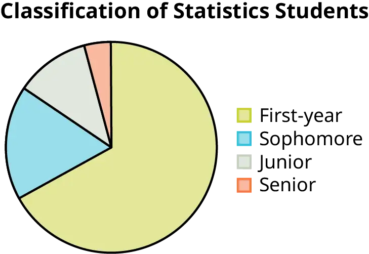
Solution
This pie chart shows the students in each year, which is qualitative (or categorical) data.
Try It
The registrar at State University keeps records of the number of credit hours students complete each semester. The data collected are summarized in the histogram. The class boundaries are 10 to less than 13, 13 to less than 16, 16 to less than 19, 19 to less than 22, and 22 to less than 25.
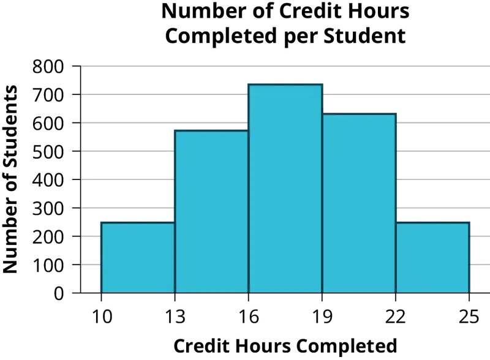
What type of data does this graph show?
Qualitative Data Discussion¶
Below are tables comparing the number of part-time and full-time students at De Anza College and Foothill College enrolled for the most recent spring quarter. The tables display counts (frequencies) and percentages or proportions (relative frequencies). The percent columns make comparing the same categories in the colleges easier. Displaying percentages along with the numbers is often helpful, but it is particularly important when comparing sets of data that do not have the same totals, such as the total enrollments for both colleges in this example. Notice how much larger the percentage for part-time students at Foothill College is compared to De Anza College.
Table 1.3 Most Recent Spring Quarter
| De Anza College | Foothill College | ||||
|---|---|---|---|---|---|
| Number | Percent | Number | Percent | ||
| Full-time | 9,200 | 40.9% | Full-time | 4,059 | 28.6% |
| Part-time | 13,296 | 59.1% | Part-time | 10,124 | 71.4% |
| Total | 22,496 | 100% | Total | 14,183 | 100% |
Tables are a good way of organizing and displaying data. But graphs can be even more helpful in understanding the data. There are no strict rules concerning which graphs to use. Two graphs that are used to display qualitative data are pie charts and bar graphs.
In a pie chart, categories of data are represented by wedges in a circle and are proportional in size to the percent of individuals in each category.
In a bar graph, the length of the bar for each category is proportional to the number or percent of individuals in each category. Bars may be vertical or horizontal.
A Pareto chart consists of bars that are sorted into order by category size (largest to smallest).
Look at Figure 1.5 and Figure 1.6 and determine which graph (pie or bar) you think displays the comparisons better.
It is a good idea to look at a variety of graphs to see which is the most helpful in displaying the data. We might make different choices of what we think is the “best” graph depending on the data and the context. Our choice also depends on what we are using the data for.
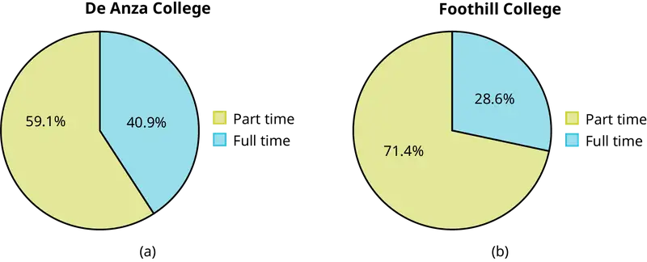
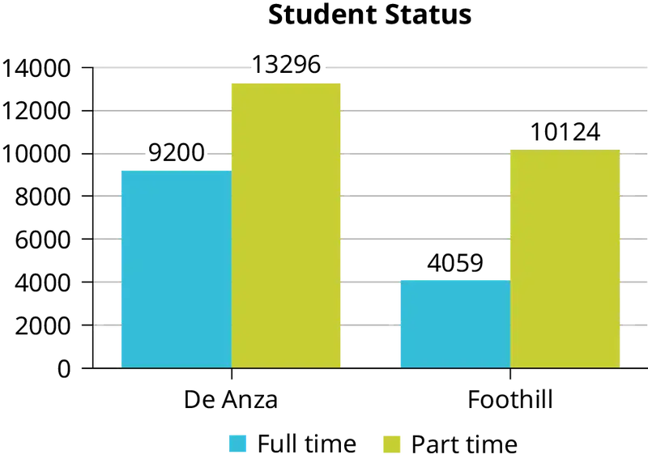
Percentages That Add to More (or Less) Than 100%¶
Sometimes percentages add up to be more than 100% (or less than 100%). In the graph, the percentages add to more than 100% because students can be in more than one category. A bar graph is appropriate to compare the relative size of the categories. A pie chart cannot be used. It also could not be used if the percentages added to less than 100%.
Table 1.4 De Anza College Most Recent Spring Quarter
| Characteristic/Category | Percent |
|---|---|
| Full-Time Students | 40.9% |
| Students who intend to transfer to a 4-year educational institution | 48.6% |
| Students under age 25 | 61.0% |
| TOTAL | 150.5% |
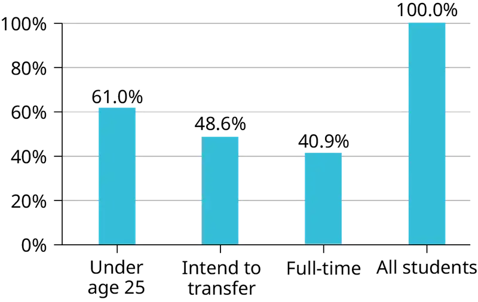
Omitting Categories/Missing Data¶
The table displays Ethnicity of Students but is missing the "Other/Unknown" category. This category contains people who did not feel they fit into any of the ethnicity categories or declined to respond. Notice that the frequencies do not add up to the total number of students. In this situation, create a bar graph and not a pie chart.
Table 1.5 Ethnicity of Students at De Anza College in the Most Recent Fall Term
| Frequency | Percent | |
|---|---|---|
| Asian | 8,794 | 36.1% |
| Black | 1,412 | 5.8% |
| Filipino | 1,298 | 5.3% |
| Hispanic/Latino | 4,180 | 17.1% |
| Native American | 146 | 0.6% |
| Pacific Islander | 236 | 1.0% |
| White | 5,978 | 24.5% |
| TOTAL | 22,044 out of 24,382 | 90.4% out of 100% |
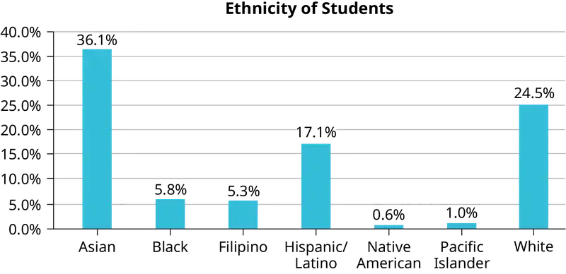
The following graph is the same as the previous graph but the “Other/Unknown” percent (9.6%) has been included. The “Other/Unknown” category is large compared to some of the other categories (Native American, 0.6%, Pacific Islander 1.0%). This is important to know when we think about what the data are telling us.
This particular bar graph in Figure 1.9 can be difficult to understand visually. The graph in Figure 1.10 is a Pareto chart. The Pareto chart has the bars sorted from largest to smallest and is easier to read and interpret.
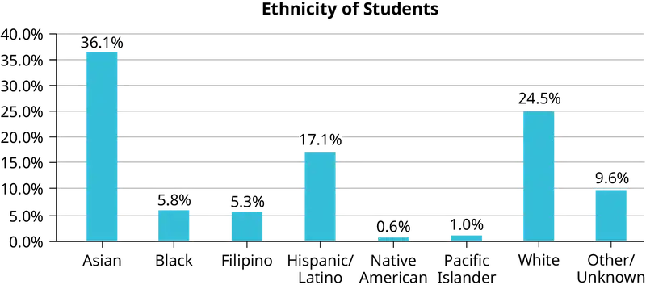
![A Pareto chart is a bar graph with the bars ordered from greatest height to least. This one shows ethnicity of students. The vertical axis marks values from 0.0% to 40.0% in intervals of 5.0%. The horizontal axis categories are Asian (height of bar shows 36.1%), White (height of bar shows 24.5%), Hispanic/Latino (height of bar shows 17.1%), Other/Unknown (height of bar shows 9.6%), Black (height of bar shows 5.8%), Filipino (height of bar shows 5.3%), Pacific Islander (height of bar shows 1.0%), and Native American (height of bar shows 0.6%).](img/fig-ch01-patchfile-07.webp)
Pie Charts: No Missing Data¶
The following pie charts have the “Other/Unknown” category included (since the percentages must add to 100%). The chart in Figure 1.11(b) is organized by the size of each wedge, which makes it a more visually informative graph than the unsorted, alphabetical graph in Figure 1.11(a).
![Two pie charts are titled Ethnicity of Students. Chart (a) The sections of the chart are ordered alphabetically. Clockwise from the top, the sections show that Asian students make up 36.1% of students, Black 5.8%, Filipino 5.3%, Hispanic/Latino 17.1%, Native American 0.6%, Pacific Islander 1.0%, White 24.5%, and Other 9.6%. Chart (b) This is the same data as shown in chart (a), but the sections of the chart are now ordered from greatest area to least. Clockwise from the top, the sections show that Asian students make up 36.1% of students, White 24.5%, Hispanic/Latino 17.1%, Other 9.6%, Black 5.8%, Filipino 5.3%, Pacific Islander 1.0%, and Native American 0.6%.](img/fig-ch01-patchfile-08ab.webp)
Sampling¶
Gathering information about an entire population often costs too much or is virtually impossible. Instead, we use a sample of the population. A sample should have the same characteristics as the population it is representing. Most statisticians use various methods of random sampling in an attempt to achieve this goal. This section will describe a few of the most common methods. There are several different methods of random sampling. In each form of random sampling, each member of a population initially has an equal chance of being selected for the sample. Each method has pros and cons. The easiest method to describe is called a simple random sample. Any group of n individuals is equally likely to be chosen as any other group of n individuals if the simple random sampling technique is used. In other words, each sample of the same size has an equal chance of being selected. For example, suppose Lisa wants to form a four-person study group (herself and three other people) from her pre-calculus class, which has 31 members not including Lisa. To choose a simple random sample of size three from the other members of her class, Lisa could put all 31 names in a hat, shake the hat, close her eyes, and pick out three names. A more technological way is for Lisa to first list the last names of the members of her class together with a two-digit number, as in Table 1.6:
Table 1.6 Class Roster
| ID | Name | ID | Name | ID | Name |
|---|---|---|---|---|---|
| 00 | Anselmo | 11 | King | 21 | Roquero |
| 01 | Bautista | 12 | Legeny | 22 | Roth |
| 02 | Bayani | 13 | Lundquist | 23 | Rowell |
| 03 | Cheng | 14 | Macierz | 24 | Salangsang |
| 04 | Cuarismo | 15 | Motogawa | 25 | Slade |
| 05 | Cuningham | 16 | Okimoto | 26 | Stratcher |
| 06 | Fontecha | 17 | Patel | 27 | Tallai |
| 07 | Hong | 18 | Price | 28 | Tran |
| 08 | Hoobler | 19 | Quizon | 29 | Wai |
| 09 | Jiao | 20 | Reyes | 30 | Wood |
| 10 | Khan |
Lisa can use a table of random numbers (found in many statistics books and mathematical handbooks), a calculator, or a computer to generate random numbers. For this example, suppose Lisa chooses to generate random numbers from a calculator. The numbers generated are as follows:
0.94360
0.99832
0.14669
0.51470
0.40581
0.73381
0.04399
Lisa reads two-digit groups until she has chosen three class members (that is, she reads 0.94360 as the groups 94, 43, 36, 60). Each random number may only contribute one class member. If she needed to, Lisa could have generated more random numbers.
The random numbers 0.94360 and 0.99832 do not contain appropriate two digit numbers. However the third random number, 0.14669, contains 14 (the fourth random number also contains 14), the fifth random number contains 05, and the seventh random number contains 04. The two-digit number 14 corresponds to Macierz, 05 corresponds to Cuningham, and 04 corresponds to Cuarismo. Besides herself, Lisa’s group will consist of Marcierz, Cuningham, and Cuarismo.
Using the Calculator
To generate random numbers:
- Press
MATH. - Arrow over to
PRB. - Press
5:randInt(. Enter 0, 30). - Press ENTER for the first random number.
- Press ENTER two more times for the other 2 random numbers. If there is a repeat press ENTER again.
Note: randInt(0, 30, 3) will generate 3 random numbers.
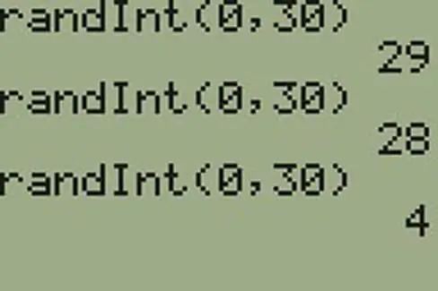
Besides simple random sampling, there are other forms of sampling that involve a chance process for getting the sample. Other well-known random sampling methods are the stratified sample, the cluster sample, and the systematic sample.
To choose a stratified sample, divide the population into groups called strata and then take a proportionate number from each stratum. For example, you could stratify (group) your college population by department and then choose a proportionate simple random sample from each stratum (each department) to get a stratified random sample. To choose a simple random sample from each department, number each member of the first department, number each member of the second department, and do the same for the remaining departments. Then use simple random sampling to choose proportionate numbers from the first department and do the same for each of the remaining departments. Those numbers picked from the first department, picked from the second department, and so on represent the members who make up the stratified sample.
To choose a cluster sample, divide the population into clusters (groups) and then randomly select some of the clusters. All the members from these clusters are in the cluster sample. For example, if you randomly sample four departments from your college population, the four departments make up the cluster sample. Divide your college faculty by department. The departments are the clusters. Number each department, and then choose four different numbers using simple random sampling. All members of the four departments with those numbers are the cluster sample.
To choose a systematic sample, randomly select a starting point and take every nth piece of data from a listing of the population. For example, suppose you have to do a phone survey. Your phone book contains 20,000 residence listings. You must choose 400 names for the sample. Number the population 1–20,000 and then use a simple random sample to pick a number that represents the first name in the sample. Then choose every fiftieth name thereafter until you have a total of 400 names (you might have to go back to the beginning of your phone list). Systematic sampling is frequently chosen because it is a simple method.
A type of sampling that is non-random is convenience sampling. Convenience sampling involves using results that are readily available. For example, a computer software store conducts a marketing study by interviewing potential customers who happen to be in the store browsing through the available software. The results of convenience sampling may be very good in some cases and highly biased (favor certain outcomes) in others.
Sampling data should be done very carefully. Collecting data carelessly can have devastating results. Surveys mailed to households and then returned may be very biased (they may favor a certain group). It is better for the person conducting the survey to select the sample respondents.
Sampling with replacement is truly random sampling. That is, once a member is picked, that member goes back into the population and thus may be chosen more than once. However for practical reasons, in most populations, simple random sampling without replacement is done. Surveys are typically done without replacement. That is, a member of the population may be chosen only once. Most samples are taken from large populations and the sample tends to be small in comparison to the population. Since this is the case, sampling without replacement is approximately the same as sampling with replacement because the chance of picking the same individual more than once with replacement is very low.
Sampling without replacement instead of sampling with replacement becomes a mathematical issue only when the population is small.
When you analyze data, it is important to be aware of sampling errors and nonsampling errors. The actual process of sampling causes sampling errors. For example, the sample may not be large enough. Factors not related to the sampling process cause nonsampling errors. A defective counting device can cause a nonsampling error.
In reality, a sample will never be exactly representative of the population so there will always be some sampling error. As a rule, the larger the sample, the smaller the sampling error.
In statistics, a sampling bias is created when a sample is collected from a population and some members of the population are not as likely to be chosen as others (remember, each member of the population should have an equally likely chance of being chosen). When a sampling bias happens, there can be incorrect conclusions drawn about the population that is being studied.
Critical Evaluation¶
We need to evaluate the statistical studies we read about critically and analyze them before accepting the results of the studies. Common problems to be aware of include
- Problems with samples: A sample must be representative of the population. A sample that is not representative of the population is biased. Biased samples that are not representative of the population give results that are inaccurate and not valid.
- Self-selected samples: Responses only by people who choose to respond, such as call-in surveys, are often unreliable.
- Sample size issues: Samples that are too small may be unreliable. Larger samples are better, if possible. In some situations, having small samples is unavoidable and can still be used to draw conclusions. Examples: crash testing cars or medical testing for rare conditions
- Undue influence: collecting data or asking questions in a way that influences the response
- Non-response or refusal of subject to participate: The collected responses may no longer be representative of the population. Often, people with strong positive or negative opinions may answer surveys, which can affect the results.
- Causality: A relationship between two variables does not mean that one causes the other to occur. They may be related (correlated) because of their relationship through a different variable.
- Self-funded or self-interest studies: A study performed by a person or organization in order to support their claim. Is the study impartial? Read the study carefully to evaluate the work. Do not automatically assume that the study is good, but do not automatically assume the study is bad either. Evaluate it on its merits and the work done.
- Misleading use of data: improperly displayed graphs, incomplete data, or lack of context
- Confounding: When the effects of multiple factors on a response cannot be separated. Confounding makes it difficult or impossible to draw valid conclusions about the effect of each factor.
Collaborative Exercise
As a class, determine whether or not the following samples are representative. If they are not, discuss the reasons.
- To find the average GPA of all students in a university, use all honor students at the university as the sample.
- To find out the most popular cereal among young people under the age of ten, stand outside a large supermarket for three hours and speak to every twentieth child under age ten who enters the supermarket.
- To find the average annual income of all adults in the United States, sample U.S. Representatives. Create a cluster sample by considering each state as a stratum (group). By using simple random sampling, select states to be part of the cluster. Then survey every U.S. Representative in the cluster.
- To determine the proportion of people taking public transportation to work, survey 20 people in New York City. Conduct the survey by sitting in Central Park on a bench and interviewing every person who sits next to you.
- To determine the average cost of a two-day stay in a hospital in Massachusetts, survey 100 hospitals across the state using simple random sampling.
Example 1.11
A study is done to determine the average tuition that San Jose State undergraduate students pay per semester. Each student in the following samples is asked how much tuition they paid for the Fall semester. What is the type of sampling in each case?
- A sample of 100 undergraduate San Jose State students is taken by organizing the students’ names by classification (first-year, sophomore, junior, or senior), and then selecting 25 students from each.
- A random number generator is used to select a student from the alphabetical listing of all undergraduate students in the Fall semester. Starting with that student, every 50th student is chosen until 75 students are included in the sample.
- A completely random method is used to select 75 students. Each undergraduate student in the fall semester has the same probability of being chosen at any stage of the sampling process.
- The first-year, sophomore, junior, and senior years are numbered one, two, three, and four, respectively. A random number generator is used to pick two of those years. All students in those two years are in the sample.
- An administrative assistant is asked to stand in front of the library one Wednesday and to ask the first 100 undergraduate students he encounters what they paid for tuition the Fall semester. Those 100 students are the sample.
Solution
a. stratified; b. systematic; c. simple random; d. cluster; e. convenience
Try It
You are going to use the random number generator to generate different types of samples from the data.
This table displays six sets of quiz scores (each quiz counts 10 points) for an elementary statistics class.
Table 1.7
| #1 | #2 | #3 | #4 | #5 | #6 |
|---|---|---|---|---|---|
| 5 | 7 | 10 | 9 | 8 | 3 |
| 10 | 5 | 9 | 8 | 7 | 6 |
| 9 | 10 | 8 | 6 | 7 | 9 |
| 9 | 10 | 10 | 9 | 8 | 9 |
| 7 | 8 | 9 | 5 | 7 | 4 |
| 9 | 9 | 9 | 10 | 8 | 7 |
| 7 | 7 | 10 | 9 | 8 | 8 |
| 8 | 8 | 9 | 10 | 8 | 8 |
| 9 | 7 | 8 | 7 | 7 | 8 |
| 8 | 8 | 10 | 9 | 8 | 7 |
Instructions: Use the Random Number Generator to pick samples.
-
Create a stratified sample by column. Pick three quiz scores randomly from each column.
- Number each row one through ten.
- On your calculator, press Math and arrow over to PRB.
- For column 1, Press 5:
randInt( and enter 1,10). Press ENTER. Record the number. Press ENTER 2 more times (even the repeats). Record these numbers. Record the three quiz scores in column one that correspond to these three numbers. - Repeat for columns two through six.
- These 18 quiz scores are a stratified sample.
-
Create a cluster sample by picking two of the columns. Use the column numbers: one through six.
- Press
MATHand arrow over to PRB. - Press 5:
randInt( and enter 1,6). Press ENTER. Record the number. Press ENTER and record that number. - The two numbers are for two of the columns.
- The quiz scores (20 of them) in these 2 columns are the cluster sample.
- Press
-
Create a simple random sample of 15 quiz scores.
- Use the numbering one through 60.
- Press
MATH. Arrow over to PRB. Press 5:randInt( and enter 1, 60). - Press ENTER 15 times and record the numbers.
- Record the quiz scores that correspond to these numbers.
- These 15 quiz scores are the random sample.
-
Create a systematic sample of 12 quiz scores.
- Use the numbering one through 60.
- Press
MATH. Arrow over to PRB. Press 5:randInt( and enter 1, 60). - Press ENTER. Record the number and the first quiz score. From that number, count ten quiz scores and record that quiz score. Keep counting ten quiz scores and recording the quiz score until you have a sample of 12 quiz scores. You may wrap around (go back to the beginning).
Example 1.12
Determine the type of sampling used (simple random, stratified, systematic, cluster, or convenience).
- A soccer coach selects six players from a group of boys aged eight to ten, seven players from a group of boys aged 11 to 12, and three players from a group of boys aged 13 to 14 to form a recreational soccer team.
- A pollster interviews all human resource personnel in five different high tech companies.
- A high school educational researcher interviews 50 public high school teachers and 50 private high school teachers.
- A medical researcher interviews every third cancer patient from a list of cancer patients at a local hospital.
- A high school counselor uses a computer to generate 50 random numbers and then picks students whose names correspond to the numbers.
- A student interviews classmates in their algebra class to determine how many pairs of jeans a student owns, on the average.
Solution
a. stratified; b. cluster; c. stratified; d. systematic; e. simple random; f.convenience
Try It
Determine the type of sampling used (simple random, stratified, systematic, cluster, or convenience).
A high school principal polls 50 first-year students, 50 sophomores, 50 juniors, and 50 seniors regarding policy changes for after school activities.
If we were to examine two samples representing the same population, even if we used random sampling methods for the samples, they would not be exactly the same. Just as there is variation in data, there is variation in samples. As you become accustomed to sampling, the variability will begin to seem natural.
NOTE
In Confidence Intervals of the text, sample size formulas are provided which will determine sample sizes when sampling from a population. The sample size will be a function of the desired precision and not a function of the population size. It may be somewhat counterintuitive that the sample size does not depend on the population size. However, this implies that a sample size of 1,000 can be adequate to represent a population of 100,000 versus 1,000,000 given that the same level of precision is desired. When working in Confidence Intervals with sample size formulas, the student will notice that population size is not a factor in determining the sample size.
Example 1.13
Suppose ABC College has 10,000 part-time students (the population). We are interested in the average amount of money a part-time student spends on books in the fall term. Asking all 10,000 students is an almost impossible task.
Suppose we take two different samples.
First, we use convenience sampling and survey ten students from a first term organic chemistry class. Many of these students are taking first term calculus in addition to the organic chemistry class. The amount of money they spend on books is as follows:
$128
$87
$173
$116
$130
$204
$147
$189
$93
$153
The second sample is taken using a list of senior citizens who take P.E. classes and taking every fifth senior citizen on the list, for a total of ten senior citizens. They spend:
$50
$40
$36
$15
$50
$100
$40
$53
$22
$22
It is unlikely that any student is in both samples.
a. Do you think that either of these samples is representative of (or is characteristic of) the entire 10,000 part-time student population?
Solution
a. No. The first sample probably consists of science-oriented students. Besides the chemistry course, some of them are also taking first-term calculus. Books for these classes tend to be expensive. Most of these students are, more than likely, paying more than the average part-time student for their books. The second sample is a group of senior citizens who are, more than likely, taking courses for health and interest. The amount of money they spend on books is probably much less than the average part-time student. Both samples are biased. Also, in both cases, not all students have a chance to be in either sample.
b. Since these samples are not representative of the entire population, is it wise to use the results to describe the entire population?
Solution
b. No. For these samples, each member of the population did not have an equally likely chance of being chosen.
Now, suppose we take a third sample. We choose ten different part-time students from the disciplines of chemistry, math, English, psychology, sociology, history, nursing, physical education, art, and early childhood development. (We assume that these are the only disciplines in which part-time students at ABC College are enrolled and that an equal number of part-time students are enrolled in each of the disciplines.) Each student is chosen using simple random sampling. Using a calculator, random numbers are generated and a student from a particular discipline is selected if they have a corresponding number. The students spend the following amounts:
$180
$50
$150
$85
$260
$75
$180
$200
$200
$150
c. Is the sample biased?
Solution
c. The sample is unbiased, but a larger sample would be recommended to increase the likelihood that the sample will be close to representative of the population. However, for a biased sampling technique, even a large sample runs the risk of not being representative of the population.
Students often ask if it is "good enough" to take a sample, instead of surveying the entire population. If the survey is done well, the answer is yes.
Try It
A local radio station has a fan base of 20,000 listeners. The station wants to know if its audience would prefer more music or more talk shows. Asking all 20,000 listeners is an almost impossible task.
The station uses convenience sampling and surveys the first 200 people they meet at one of the station’s music concert events. 24 people said they’d prefer more talk shows, and 176 people said they’d prefer more music.
Do you think that this sample is representative of (or is characteristic of) the entire 20,000 listener population?
Variation in Data¶
Variation is present in any set of data. For example, 16-ounce cans of beverage may contain more or less than 16 ounces of liquid. In one study, eight 16-ounce cans were measured and produced the following amount (in ounces) of beverage:
15.8
16.1
15.2
14.8
15.8
15.9
16.0
15.5
Measurements of the amount of beverage in a 16-ounce can may vary because different people make the measurements or because the exact amount, 16 ounces of liquid, was not put into the cans. Manufacturers regularly run tests to determine if the amount of beverage in a 16-ounce can falls within the desired range.
Be aware that as you take data, your data may vary somewhat from the data someone else is taking for the same purpose. This is completely natural. However, if two or more of you are taking the same data and get very different results, it is time for you and the others to reevaluate your data-taking methods and your accuracy.
Variation in Samples¶
It was mentioned previously that two or more samples from the same population, taken randomly, and having close to the same characteristics of the population will likely be different from each other. Suppose Doreen and Jung both decide to study the average amount of time students at their college sleep each night. Doreen and Jung each take samples of 500 students. Doreen uses systematic sampling and Jung uses cluster sampling. Doreen's sample will be different from Jung's sample. Even if Doreen and Jung used the same sampling method, in all likelihood their samples would be different. Neither would be wrong, however.
Think about what contributes to making Doreen’s and Jung’s samples different.
If Doreen and Jung took larger samples (i.e. the number of data values is increased), their sample results (the average amount of time a student sleeps) might be closer to the actual population average. But still, their samples would be, in all likelihood, different from each other. This variability in samples cannot be stressed enough.
Size of a Sample¶
The size of a sample (often called the number of observations) is important. The examples you have seen in this book so far have been small. Samples of only a few hundred observations, or even smaller, are sufficient for many purposes. In polling, samples that are from 1,200 to 1,500 observations are considered large enough and good enough if the survey is random and is well done. You will learn why when you study confidence intervals.
Be aware that many large samples are biased. For example, call-in surveys are invariably biased, because people choose to respond or not.
Collaborative Exercise
Divide into groups of two, three, or four. Your instructor will give each group one six-sided die. Try this experiment twice. Roll one fair die (six-sided) 20 times. Record the number of ones, twos, threes, fours, fives, and sixes you get in Table 1.8 and Table 1.9 (“frequency” is the number of times a particular face of the die occurs):
Table 1.8 First Experiment (20 rolls)
| Face on Die | Frequency |
|---|---|
| 1 | |
| 2 | |
| 3 | |
| 4 | |
| 5 | |
| 6 |
Table 1.9 Second Experiment (20 rolls)
| Face on Die | Frequency |
|---|---|
| 1 | |
| 2 | |
| 3 | |
| 4 | |
| 5 | |
| 6 |
Did the two experiments have the same results? Probably not. If you did the experiment a third time, do you expect the results to be identical to the first or second experiment? Why or why not?
Which experiment had the correct results? They both did. The job of the statistician is to see through the variability and draw appropriate conclusions.
1.3 Frequency, Frequency Tables, and Levels of Measurement¶
Once you have a set of data, you will need to organize it so that you can analyze how frequently each datum occurs in the set. However, when calculating the frequency, you may need to round your answers so that they are as precise as possible.
Answers and Rounding Off¶
A simple way to round off answers is to carry your final answer one more decimal place than was present in the original data. Round off only the final answer. Do not round off any intermediate results, if possible. If it becomes necessary to round off intermediate results, carry them to at least twice as many decimal places as the final answer. For example, the average of the three quiz scores four, six, and nine is 6.3, rounded off to the nearest tenth, because the data are whole numbers. Most answers will be rounded off in this manner.
It is not necessary to reduce most fractions in this course. Especially in Probability Topics, the chapter on probability, it is more helpful to leave an answer as an unreduced fraction.
Levels of Measurement¶
The way a set of data is measured is called its level of measurement. Correct statistical procedures depend on a researcher being familiar with levels of measurement. Not every statistical operation can be used with every set of data. Data can be classified into four levels of measurement. They are (from lowest to highest level):
- Nominal scale level
- Ordinal scale level
- Interval scale level
- Ratio scale level
Data that is measured using a nominal scale is qualitative (categorical). Categories, colors, names, labels and favorite foods along with yes or no responses are examples of nominal level data. Nominal scale data are not ordered. For example, trying to classify people according to their favorite food does not make any sense. Putting pizza first and sushi second is not meaningful.
Smartphone companies are another example of nominal scale data. The data are the names of the companies that make smartphones, but there is no agreed upon order of these brands, even though people may have personal preferences. Nominal scale data cannot be used in calculations.
Data that is measured using an ordinal scale is similar to nominal scale data but there is a big difference. The ordinal scale data can be ordered. An example of ordinal scale data is a list of the top five national parks in the United States. The top five national parks in the United States can be ranked from one to five but we cannot measure differences between the data.
Another example of using the ordinal scale is a cruise survey where the responses to questions about the cruise are “excellent,” “good,” “satisfactory,” and “unsatisfactory.” These responses are ordered from the most desired response to the least desired. But the differences between two pieces of data cannot be measured. Like the nominal scale data, ordinal scale data cannot be used in calculations.
Like data measured on an ordinal scale, data that are measured on an interval scale have a definite ordering. While ordinal scale data are categorical, or qualitative, interval scale data are numerical, or quantitative. It is possible to calculate differences between values measured on an interval scale. There is no minimum or "zero" value, however.
Temperature scales like Celsius (C) and Fahrenheit (F) are measured by using the interval scale. In both temperature measurements, 40° is equal to 100° minus 60°. Differences make sense. But 0 degrees does not represent a minimum value. In both scales, 0 is not the absolute lowest temperature. Temperatures like -10° F and -15° C exist and are colder than 0.
Data that are measured using the ratio scale give the most information. Ratio scale data is like interval scale data, but there is a minimum value and ratios can be calculated. For example, four multiple choice statistics final exam scores are 80, 68, 20 and 92 (out of a possible 100 points). The exams are machine-graded.
The data can be put in order from lowest to highest: 20, 68, 80, 92.
The differences between the data have meaning. The score 92 is more than the score 68 by 24 points. Ratios can be calculated. The minimum score is 0. So 80 is four times 20. The score of 80 is four times better than the score of 20.
Frequency¶
Twenty students were asked how many hours they worked per day. Their responses, in hours, are as follows:
5
6
3
3
2
4
7
5
2
3
5
6
5
4
4
3
5
2
5
3
.
Table 1.10 lists the different data values in ascending order and their frequencies.
Table 1.10 Frequency Table of Student Work Hours
| DATA VALUE | FREQUENCY |
|---|---|
| 2 | 3 |
| 3 | 5 |
| 4 | 3 |
| 5 | 6 |
| 6 | 2 |
| 7 | 1 |
A frequency is the number of times a value of the data occurs. According to Table 1.10, there are three students who work two hours, five students who work three hours, and so on. The sum of the values in the frequency column, 20, represents the total number of students included in the sample.
A relative frequency is the ratio (fraction or proportion) of the number of times a value of the data occurs in the set of all outcomes to the total number of outcomes. To find the relative frequencies, divide each frequency by the total number of students in the sample–in this case, 20. Relative frequencies can be written as fractions, percents, or decimals.
Table 1.11 Frequency Table of Student Work Hours with Relative Frequencies
| DATA VALUE | FREQUENCY | RELATIVE FREQUENCY |
|---|---|---|
| 2 | 3 | \(\frac{3}{20}\) or 0.15 |
| 3 | 5 | \(\frac{5}{20}\) or 0.25 |
| 4 | 3 | \(\frac{3}{20}\) or 0.15 |
| 5 | 6 | \(\frac{6}{20}\) or 0.30 |
| 6 | 2 | \(\frac{2}{20}\) or 0.10 |
| 7 | 1 | \(\frac{1}{20}\) or 0.05 |
The sum of the values in the relative frequency column of Table 1.11 is \(\frac{20}{20}\) , or 1.
Cumulative relative frequency is the accumulation of the previous relative frequencies. To find the cumulative relative frequencies, add all the previous relative frequencies to the relative frequency for the current row, as shown in Table 1.12.
Table 1.12 Frequency Table of Student Work Hours with Relative and Cumulative Relative Frequencies
| DATA VALUE | FREQUENCY | RELATIVE FREQUENCY |
CUMULATIVE RELATIVE FREQUENCY |
|---|---|---|---|
| 2 | 3 | \(\frac{3}{20}\) or 0.15 | 0.15 |
| 3 | 5 | \(\frac{5}{20}\) or 0.25 | 0.15 + 0.25 = 0.40 |
| 4 | 3 | \(\frac{3}{20}\) or 0.15 | 0.40 + 0.15 = 0.55 |
| 5 | 6 | \(\frac{6}{20}\) or 0.30 | 0.55 + 0.30 = 0.85 |
| 6 | 2 | \(\frac{2}{20}\) or 0.10 | 0.85 + 0.10 = 0.95 |
| 7 | 1 | \(\frac{1}{20}\) or 0.05 | 0.95 + 0.05 = 1.00 |
The last entry of the cumulative relative frequency column is one, indicating that one hundred percent of the data has been accumulated.
NOTE
Because of rounding, the relative frequency column may not always sum to one, and the last entry in the cumulative relative frequency column may not be one. However, they each should be close to one.
Table 1.13 represents the heights, in inches, of a sample of 100 semiprofessional soccer players.
Table 1.13 Frequency Table of Soccer Player Height
| HEIGHTS (INCHES) |
FREQUENCY | RELATIVE FREQUENCY |
CUMULATIVE RELATIVE FREQUENCY |
|---|---|---|---|
| 59.95–61.95 | 5 | \(\frac{5}{100}\) = 0.05 | 0.05 |
| 61.95–63.95 | 3 | \(\frac{3}{100}\) = 0.03 | 0.05 + 0.03 = 0.08 |
| 63.95–65.95 | 15 | \(\frac{15}{100}\) = 0.15 | 0.08 + 0.15 = 0.23 |
| 65.95–67.95 | 40 | \(\frac{40}{100}\) = 0.40 | 0.23 + 0.40 = 0.63 |
| 67.95–69.95 | 17 | \(\frac{17}{100}\) = 0.17 | 0.63 + 0.17 = 0.80 |
| 69.95–71.95 | 12 | \(\frac{12}{100}\) = 0.12 | 0.80 + 0.12 = 0.92 |
| 71.95–73.95 | 7 | \(\frac{7}{100}\) = 0.07 | 0.92 + 0.07 = 0.99 |
| 73.95–75.95 | 1 | \(\frac{1}{100}\) = 0.01 | 0.99 + 0.01 = 1.00 |
| Total = 100 | Total = 1.00 |
The data in this table have been grouped into the following intervals:
- 59.95 to 61.95 inches
- 61.95 to 63.95 inches
- 63.95 to 65.95 inches
- 65.95 to 67.95 inches
- 67.95 to 69.95 inches
- 69.95 to 71.95 inches
- 71.95 to 73.95 inches
- 73.95 to 75.95 inches
NOTE
This example is used again in Descriptive Statistics, where the method used to compute the intervals will be explained.
In this sample, there are five players whose heights fall within the interval 59.95–61.95 inches, three players whose heights fall within the interval 61.95–63.95 inches, 15 players whose heights fall within the interval 63.95–65.95 inches, 40 players whose heights fall within the interval 65.95–67.95 inches, 17 players whose heights fall within the interval 67.95–69.95 inches, 12 players whose heights fall within the interval 69.95–71.95, seven players whose heights fall within the interval 71.95–73.95, and one player whose heights fall within the interval 73.95–75.95. All heights fall between the endpoints of an interval and not at the endpoints.
Example 1.14
From Table 1.13, find the percentage of heights that are less than 65.95 inches.
Solution
If you look at the first, second, and third rows, the heights are all less than 65.95 inches. There are 5 + 3 + 15 = 23 players whose heights are less than 65.95 inches. The percentage of heights less than 65.95 inches is then \(\frac{23}{100}\) or 23%. This percentage is the cumulative relative frequency entry in the third row.
Try It
Table 1.14 shows the amount, in inches, of annual rainfall in a sample of towns.
Table 1.14
| Rainfall (Inches) | Frequency | Relative Frequency | Cumulative Relative Frequency |
|---|---|---|---|
| 2.95–4.97 | 6 | \(\frac{6}{50}\) = 0.12 | 0.12 |
| 4.97–6.99 | 7 | \(\frac{7}{50}\) = 0.14 | 0.12 + 0.14 = 0.26 |
| 6.99–9.01 | 15 | \(\frac{15}{50}\) = 0.30 | 0.26 + 0.30 = 0.56 |
| 9.01–11.03 | 8 | \(\frac{8}{50}\) = 0.16 | 0.56 + 0.16 = 0.72 |
| 11.03–13.05 | 9 | \(\frac{9}{50}\) = 0.18 | 0.72 + 0.18 = 0.90 |
| 13.05–15.07 | 5 | \(\frac{5}{50}\) = 0.10 | 0.90 + 0.10 = 1.00 |
| Total = 50 | Total = 1.00 |
From Table 1.14, find the percentage of rainfall that is less than 9.01 inches.
Example 1.15
From Table 1.13, find the percentage of heights that fall between 61.95 and 65.95 inches.
Solution
Add the relative frequencies in the second and third rows: 0.03 + 0.15 = 0.18 or 18%.
Try It
From Table 1.14, find the percentage of rainfall that is between 6.99 and 13.05 inches.
Example 1.16
Use the heights of the 100 semiprofessional soccer players in Table 1.13. Fill in the blanks and check your answers.
- The percentage of heights that are from 67.95 to 71.95 inches is: ____.
- The percentage of heights that are from 67.95 to 73.95 inches is: ____.
- The percentage of heights that are more than 65.95 inches is: ____.
- The number of players in the sample who are between 61.95 and 71.95 inches tall is: ____.
- What kind of data are the heights?
- Describe how you could gather this data (the heights) so that the data are characteristic of all semiprofessional soccer players.
Remember, you count frequencies. To find the relative frequency, divide the frequency by the total number of data values. To find the cumulative relative frequency, add all of the previous relative frequencies to the relative frequency for the current row.
Solution
- 29%
- 36%
- 77%
- 87
- quantitative continuous
- get rosters from each team and choose a simple random sample from each
Try It
From Table 1.14, find the number of towns that have rainfall between 2.95 and 9.01 inches.
Collaborative Exercise
In your class, have someone conduct a survey of the number of siblings each student has. Create a frequency table. Add to it a relative frequency column and a cumulative relative frequency column. Answer the following questions:
- What percentage of the students in your class have no siblings?
- What percentage of the students have from one to three siblings?
- What percentage of the students have fewer than three siblings?
Example 1.17
Nineteen people were asked how many miles, to the nearest mile, they commute to work each day. The data are as follows:
2
5
7
3
2
10
18
15
20
7
10
18
5
12
13
12
4
5
10
. Table 1.15 was produced:
Table 1.15 Frequency of Commuting Distances
| DATA | FREQUENCY | RELATIVE FREQUENCY |
CUMULATIVE RELATIVE FREQUENCY |
|---|---|---|---|
| 2 | 2 | \(\frac{2}{19}\) | \(\frac{2}{19}\) |
| 3 | 1 | \(\frac{1}{19}\) | \(\frac{3}{19}\) |
| 4 | 1 | \(\frac{1}{19}\) | \(\frac{4}{19}\) |
| 5 | 3 | \(\frac{3}{19}\) | \(\frac{7}{19}\) |
| 7 | 2 | \(\frac{2}{19}\) | \(\frac{9}{19}\) |
| 10 | 3 | \(\frac{3}{19}\) | \(\frac{12}{19}\) |
| 12 | 2 | \(\frac{2}{19}\) | \(\frac{14}{19}\) |
| 13 | 1 | \(\frac{1}{19}\) | \(\frac{15}{19}\) |
| 15 | 1 | \(\frac{1}{19}\) | \(\frac{16}{19}\) |
| 18 | 1 | \(\frac{1}{19}\) | \(\frac{17}{19}\) |
| 20 | 1 | \(\frac{1}{19}\) | \(\frac{19}{19}\) |
- Is the table correct? If it is not correct, what is wrong?
- True or False: Three percent of the people surveyed commute three miles or less. If the statement is not correct, what should it be? If the table is incorrect, make the corrections.
- What fraction of the people surveyed commute five or seven miles?
- What fraction of the people surveyed commute 12 miles or more? Less than 12 miles? Between five and 13 miles (not including five and 13 miles)? The cumulative relative frequency column should read: \(\frac{2}{19},\frac{3}{19},\frac{4}{19},\frac{7}{19},\frac{9}{19},\frac{12}{19},\frac{14}{19},\frac{15}{19},\frac{16}{19},\frac{18}{19},\frac{19}{19}\)
Solution
- No. The frequency column sums to 18, not 19. Not all cumulative relative frequencies are correct.
- False. The frequency for three miles is one; for two miles, two.
- \(\frac{5}{19}\)
- \(\frac{7}{19}\), \(\frac{12}{19}\), \(\frac{7}{19}\)
Try It
Table 1.14 represents the amount, in inches, of annual rainfall in a sample of towns. What fraction of towns surveyed get between 11.03 and 13.05 inches of rainfall each year?
Example 1.18
Table 1.16 contains data for the number of years of service for 70 federal employees.
Table 1.16
| Number of Years of Service | Number of Federal Employees |
|---|---|
| 24 | 2 |
| 25 | 1 |
| 26 | 3 |
| 27 | 0 |
| 28 | 4 |
| 29 | 6 |
| 30 | 11 |
| 31 | 12 |
| 32 | 7 |
| 33 | 8 |
| 34 | 6 |
| 35 | 10 |
Answer the following questions.
- What is the cumulative frequency for years of service between 30 and 35 (inclusive)?
- What is the relative frequency for 30 years of service?
- What is the relative frequency for 30 years of service or less?
- What is the relative frequency for 25 years of service or more?
Solution
- Cumulative frequency is 54.
- 11/70 or 0.157 or 15.7%
- 27/70 or 0.386 or 38.6%
- 68/70 or 0.971 or 97.1%
Try It
Table 1.17 contains the total number of fatal motor vehicle traffic crashes in the United States for a period of 18 years.
Table 1.17
| Year | Total Number of Crashes | Year | Total Number of Crashes |
|---|---|---|---|
| Year 1 | 36,254 | Year 11 | 38,444 |
| Year 2 | 37,241 | Year 12 | 39,252 |
| Year 3 | 37,494 | Year 13 | 38,648 |
| Year 4 | 37,324 | Year 14 | 37,435 |
| Year 5 | 37,107 | Year 15 | 34,172 |
| Year 6 | 37,140 | Year 16 | 30,862 |
| Year 7 | 37,526 | Year 17 | 30,296 |
| Year 8 | 37,862 | Year 18 | 29,757 |
| Year 9 | 38,491 | Total | 653,782 |
| Year 10 | 38,477 |
Answer the following questions.
- What is the frequency of deaths measured from Year 7 through Year 11?
- What percentage of deaths occurred after Year 13?
- What is the relative frequency of deaths that occurred in Year 7 or before?
- What is the percentage of deaths that occurred in Year 18?
- What is the cumulative relative frequency for Year 13? Explain what this number tells you about the data.
1.4 Experimental Design and Ethics¶
Does aspirin reduce the risk of heart attacks? Is one brand of fertilizer more effective at growing roses than another? Is fatigue as dangerous to a driver as the influence of alcohol? Questions like these are answered using randomized experiments. In this module, you will learn important aspects of experimental design. Proper study design ensures the production of reliable, accurate data.
The purpose of an experiment is to investigate the relationship between two variables. When one variable causes change in another, we call the first variable the explanatory variable. The affected variable is called the response variable. In a randomized experiment, the researcher manipulates values of the explanatory variable and measures the resulting changes in the response variable. The different values of the explanatory variable are called treatments. An experimental unit is a single object or individual to be measured.
You want to investigate the effectiveness of vitamin E in preventing disease. You recruit a group of subjects and ask them if they regularly take vitamin E. You notice that the subjects who take vitamin E exhibit better health on average than those who do not. Does this prove that vitamin E is effective in disease prevention? It does not. There are many differences between the two groups compared in addition to vitamin E consumption. People who take vitamin E regularly often take other steps to improve their health: exercise, diet, other vitamin supplements, choosing not to smoke. Any one of these factors could be influencing health. As described, this study does not prove that vitamin E is the key to disease prevention.
Additional variables that can cloud a study are called lurking variables. In order to prove that the explanatory variable is causing a change in the response variable, it is necessary to isolate the explanatory variable. The researcher must design her experiment in such a way that there is only one difference between groups being compared: the planned treatments. This is accomplished by the random assignment of experimental units to treatment groups. When subjects are assigned treatments randomly, all of the potential lurking variables are spread equally among the groups. At this point, the only difference between groups is the one imposed by the researcher. Different outcomes measured in the response variable, therefore, must be a direct result of the different treatments. In this way, an experiment can prove a cause-and-effect connection between the explanatory and response variables.
The power of suggestion can have an important influence on the outcome of an experiment. Studies have shown that the expectation of the study participant can be as important as the actual medication. In one study of performance-enhancing drugs, researchers noted:
Results showed that believing one had taken the substance resulted in [performance] times almost as fast as those associated with consuming the drug itself. In contrast, taking the drug without knowledge yielded no significant performance increment.1
When participation in a study prompts a physical response from a participant, it is difficult to isolate the effects of the explanatory variable. To counter the power of suggestion, researchers set aside one treatment group as a control group. This group is given a placebo treatment–an active treatment that cannot directly influence the response variable. The control group helps researchers balance the effects of being in an experiment with the effects of the active treatments. Of course, if you are participating in a study and you know that you are receiving a pill which contains no actual medication, then the power of suggestion is no longer a factor. Blinding or masking in a randomized experiment preserves the power of suggestion. When a person involved in a research study is blinded, they do not know who is receiving the active treatment(s) and who is receiving the placebo treatment. A double-blind experiment is one in which both the subjects and the researchers involved with the subjects are blinded.
Example 1.19
Researchers want to investigate whether taking aspirin regularly reduces the risk of heart attack. Four hundred people between the ages of 50 and 84 are recruited as participants. The people are divided randomly into two groups: one group will take aspirin, and the other group will take a placebo. Each person takes one pill each day for three years, but they don't know whether they are taking aspirin or the placebo. At the end of the study, researchers count the number of people in each group who have had heart attacks.
Identify the following values for this study: population, sample, experimental units, explanatory variable, response variable, treatments.
Solution
The population is people aged 50 to 84.
The sample is the 400 people who participated.
The experimental units are the individual people in the study.
The explanatory variable is oral medication.
The treatments are aspirin and a placebo.
The response variable is whether a subject had a heart attack.
Try It
A study needs to be conducted of the effect of three medicines A, B, and C on the height of adults aged 30 to 45. 90 adults were selected randomly and divided into three equal groups. The first group was asked to take medicine A for 6 months. The second group was asked to take medicine B for 6 months. The third group was asked to take medicine C for 6 months. The average change in height in each group is calculated at the end of the study.
Identify the following values for this study: population, sample, experimental units, explanatory variables, response variable, treatments.
Answer
The population is adults aged 30 to 45.
The sample is 90 adults that were selected randomly.
The experimental units are the individual adults in the study.
The explanatory variable is the medicines.
The treatments are medicines A, B, and C.
The response variable is the average change in height in the group.
Example 1.20
The Smell & Taste Treatment and Research Foundation conducted a study to investigate whether smell can affect learning. Subjects completed mazes multiple times while wearing masks. They completed the pencil and paper mazes three times wearing floral-scented masks, and three times with unscented masks. Participants were assigned at random to wear the floral mask during the first three trials or during the last three trials. For each trial, researchers recorded the time it took to complete the maze and the subject’s impression of the mask’s scent: positive, negative, or neutral.
- Describe the explanatory and response variables in this study.
- What are the treatments?
- Identify any lurking variables that could interfere with this study.
- Is it possible to use blinding in this study?
Solution
- The explanatory variable is scent, and the response variable is the time it takes to complete the maze.
- There are two treatments: a floral-scented mask and an unscented mask.
- All subjects experienced both treatments. The order of treatments was randomly assigned so there were no differences between the treatment groups. Random assignment eliminates the problem of lurking variables.
- Subjects will clearly know whether they can smell flowers or not, so subjects cannot be blinded in this study. Researchers timing the mazes can be blinded, though. The researcher who is observing a subject will not know which mask is being worn.
Try It
The Placebo Research Group conducted a study to find the extent of placebo effects. A group of men randomly selected were asked to take a test before and after taking a pill that induces a mild headache. The pill in half of the randomly selected men was replaced with a similar pill that has no effect. For each trial, researchers recorded the change in time men took to complete the tests before and after taking the pill.
- Describe the explanatory and response variable in this study.
- What are the treatments?
- Identify any lurking variables that could interfere with this study.
- Is it possible to use blinding in this study?
Answer
- The explanatory variable is the pill, and the response variable is the change in time taken between the two tests.
- There are two treatments: a pill that induces a mild headache and a pill that has no effect.
- All subjects have been given pills. The men for kind of pill intake are randomly selected. Random assignment eliminates the problem of lurking variables.
- Subjects do not know which pill they are taking, so they are blinded in this study. The researchers know which subject is taking which pill, so they cannot be blinded in this study.
Example 1.21
A researcher wants to study the effects of birth order on personality. Explain why this study could not be conducted as a randomized experiment. What is the main problem in a study that cannot be designed as a randomized experiment?
Solution
The explanatory variable is birth order. You cannot randomly assign a person’s birth order. Random assignment eliminates the impact of lurking variables. When you cannot assign subjects to treatment groups at random, there will be differences between the groups other than the explanatory variable.
Try It
You are concerned about the effects of texting on driving performance. Design a study to test the response time of drivers while texting and while driving only. How many seconds does it take for a driver to respond when a leading car hits the brakes?
- Describe the explanatory and response variables in the study.
- What are the treatments?
- What should you consider when selecting participants?
- Your research partner wants to divide participants randomly into two groups: one to drive without distraction and one to text and drive simultaneously. Is this a good idea? Why or why not?
- Identify any lurking variables that could interfere with this study.
- How can blinding be used in this study?
Ethics¶
The widespread misuse and misrepresentation of statistical information often gives the field a bad name. Some say that “numbers don’t lie,” but the people who use numbers to support their claims often do.
An investigation of famous social psychologist, Diederik Stapel, has led to the retraction of his articles from some of the world’s top journals including Journal of Experimental Social Psychology, Social Psychology, Basic and Applied Social Psychology, British Journal of Social Psychology, and the magazine Science. Diederik Stapel is a former professor at Tilburg University in the Netherlands. An extensive investigation involving three universities where Stapel has worked concluded that the psychologist is guilty of fraud on a colossal scale. Falsified data taints over 55 papers he authored and 10 Ph.D. dissertations that he supervised.
Stapel did not deny that his deceit was driven by ambition. But it was more complicated than that, he told me. He insisted that he loved social psychology but had been frustrated by the messiness of experimental data, which rarely led to clear conclusions. His lifelong obsession with elegance and order, he said, led him to concoct sexy results that journals found attractive. “It was a quest for aesthetics, for beauty—instead of the truth,” he said. He described his behavior as an addiction that drove him to carry out acts of increasingly daring fraud, like a junkie seeking a bigger and better high.2
The committee investigating Stapel concluded that he is guilty of several practices including:
- creating datasets, which largely confirmed the prior expectations,
- altering data in existing datasets,
- changing measuring instruments without reporting the change, and
- misrepresenting the number of experimental subjects.
Clearly, it is never acceptable to falsify data the way this researcher did. Sometimes, however, violations of ethics are not as easy to spot.
Researchers have a responsibility to verify that proper methods are being followed. The report describing the investigation of Stapel’s fraud states that, “statistical flaws frequently revealed a lack of familiarity with elementary statistics.”3 Many of Stapel’s co-authors should have spotted irregularities in his data. Unfortunately, they did not know very much about statistical analysis, and they simply trusted that he was collecting and reporting data properly.
Many types of statistical fraud are difficult to spot. Some researchers simply stop collecting data once they have just enough to prove what they had hoped to prove. They don’t want to take the chance that a more extensive study would complicate their lives by producing data contradicting their hypothesis.
Professional organizations, like the American Statistical Association, clearly define expectations for researchers. There are even laws in the federal code about the use of research data.
When a statistical study uses human participants, as in medical studies, both ethics and the law dictate that researchers should be mindful of the safety of their research subjects. The U.S. Department of Health and Human Services oversees federal regulations of research studies with the aim of protecting participants. When a university or other research institution engages in research, it must ensure the safety of all human subjects. For this reason, research institutions establish oversight committees known as Institutional Review Boards (IRB). All planned studies must be approved in advance by the IRB. Key protections that are mandated by law include the following:
- Risks to participants must be minimized and reasonable with respect to projected benefits.
- Participants must give informed consent. This means that the risks of participation must be clearly explained to the subjects of the study. Subjects must consent in writing, and researchers are required to keep documentation of their consent.
- Data collected from individuals must be guarded carefully to protect their privacy.
These ideas may seem fundamental, but they can be very difficult to verify in practice. Is removing a participant’s name from the data record sufficient to protect privacy? Perhaps the person’s identity could be discovered from the data that remains. What happens if the study does not proceed as planned and risks arise that were not anticipated? When is informed consent really necessary? Suppose your doctor wants a blood sample to check your cholesterol level. Once the sample has been tested, you expect the lab to dispose of the remaining blood. At that point the blood becomes biological waste. Does a researcher have the right to take it for use in a study?
It is important that students of statistics take time to consider the ethical questions that arise in statistical studies. How prevalent is fraud in statistical studies? You might be surprised—and disappointed. There is a website dedicated to cataloging retractions of study articles that have been proven fraudulent. A quick glance will show that the misuse of statistics is a bigger problem than most people realize.
Vigilance against fraud requires knowledge. Learning the basic theory of statistics will empower you to analyze statistical studies critically.
Example 1.22
Describe the unethical behavior in each example and describe how it could impact the reliability of the resulting data. Explain how the problem should be corrected.
A researcher is collecting data in a community.
- The researcher selects a block where they are comfortable walking because they know many of the people living on the street.
- No one seems to be home at four houses on the route. They do not record the addresses and do not return at a later time to try to find residents at home.
- The researcher skips four houses on the route because they are running late for an appointment. When they get home, they fill in the forms by selecting random answers from other residents in the neighborhood.
Solution
- By selecting a convenient sample, the researcher is intentionally selecting a sample that could be biased. Claiming that this sample represents the community is misleading. The researcher needs to select areas in the community at random.
- Intentionally omitting relevant data will create bias in the sample. Suppose the researcher is gathering information about jobs and child care. By ignoring people who are not home, They may be missing data from working families that are relevant to her study. They need to make every effort to interview all members of the target sample.
- It is never acceptable to fake data. Even though the responses the researcher are “real” responses provided by other participants, the duplication is fraudulent and can create bias in the data. They researcher needs to work diligently to interview everyone on their route.
Try It
Describe the unethical behavior, if any, in each example and describe how it could impact the reliability of the resulting data. Explain how the problem should be corrected.
A study is commissioned to determine the favorite brand of fruit juice among teens in California.
- The survey is commissioned by the seller of a popular brand of apple juice.
- There are only two types of juice included in the study: apple juice and cranberry juice.
- Researchers allow participants to see the brand of juice as samples are poured for a taste test.
- Twenty-five percent of participants prefer Brand X, 33% prefer Brand Y and 42% have no preference between the two brands. Brand X references the study in a commercial saying “Most teens like Brand X as much as or more than Brand Y.”
1.5 Data Collection Experiment¶
Lab: Data Collection Experiment
Class Time:
Names:
Student Learning Outcomes
- The student will demonstrate the systematic sampling technique.
- The student will construct relative frequency tables.
- The student will interpret results and their differences from different data groupings.
Movie Survey
Ask five classmates from a different class how many movies they saw at the theater last month. Do not include rented movies.
1. Record the data.
2. In class, randomly pick one person. On the class list, mark that person’s name. Move down four names on the class list. Mark that person’s name. Continue doing this until you have marked 12 names. You may need to go back to the start of the list. For each marked name record the five data values. You now have a total of 60 data values.
3. For each name marked, record the data.
Table 1.18
Order the Data
Complete the two relative frequency tables below using your class data.
Table 1.19 Frequency of Number of Movies Viewed
| Number of Movies | Frequency | Relative Frequency | Cumulative Relative Frequency |
|---|---|---|---|
| 0 | |||
| 1 | |||
| 2 | |||
| 3 | |||
| 4 | |||
| 5 | |||
| 6 | |||
| 7+ |
Table 1.20 Frequency of Number of Movies Viewed
| Number of Movies | Frequency | Relative Frequency | Cumulative Relative Frequency |
|---|---|---|---|
| 0–1 | |||
| 2–3 | |||
| 4–5 | |||
| 6–7+ |
- Using the tables, find the percent of data that is at most two. Which table did you use and why?
- Using the tables, find the percent of data that is at most three. Which table did you use and why?
- Using the tables, find the percent of data that is more than two. Which table did you use and why?
- Using the tables, find the percent of data that is more than three. Which table did you use and why?
Discussion Questions
- Is one of the tables “more correct” than the other? Why or why not?
- In general, how could you group the data differently? Are there any advantages to either way of grouping the data?
- Why did you switch between tables, if you did, when answering the question above?
1.6 Sampling Experiment¶
Lab: Sampling Experiment
Class Time:
Names:
Student Learning Outcomes
- The student will demonstrate the simple random, systematic, stratified, and cluster sampling techniques.
- The student will explain the details of each procedure used.
In this lab, you will be asked to pick several random samples of restaurants. In each case, describe your procedure briefly, including how you might have used the random number generator, and then list the restaurants in the sample you obtained.
NOTE
The following section contains restaurants stratified by city into columns and grouped horizontally by entree cost (clusters).
Table 1.21 Restaurants Used In Sample
| Restaurants Stratified by City and Entree Cost | ||||
|---|---|---|---|---|
| Entree Cost | Under $10 | $10 to under $15 | $15 to under $20 | Over $20 |
| San Jose | El Abuelo Taq, Pasta Mia, Emma’s Express, Bamboo Hut | Emperor’s Guard, Creekside Inn | Agenda, Gervais, Miro’s | Blake’s, Eulipia, Hayes Mansion, Germania |
| Palo Alto | Senor Taco, Olive Garden, Taxi’s | Ming’s, P.A. Joe’s, Stickney’s | Scott’s Seafood, Poolside Grill, Fish Market | Sundance Mine, Maddalena’s, Spago’s |
| Los Gatos | Mary’s Patio, Mount Everest, Sweet Pea’s, Andele Taqueria | Lindsey’s, Willow Street | Toll House | Charter House, La Maison Du Cafe |
| Mountain View | Maharaja, New Ma’s, Thai-Rific, Garden Fresh | Amber Indian, La Fiesta, Fiesta del Mar, Dawit | Austin’s, Shiva’s, Mazeh | Le Petit Bistro |
| Cupertino | Hobees, Hung Fu, Samrat, Panda Express | Santa Barb. Grill, Mand. Gourmet, Bombay Oven, Kathmandu West | Fontana’s, Blue Pheasant | Hamasushi, Helios |
| Sunnyvale | Chekijababi, Taj India, Full Throttle, Tia Juana, Lemon Grass | Pacific Fresh, Charley Brown’s, Cafe Cameroon, Faz, Aruba’s | Lion & Compass, The Palace, Beau Sejour | |
| Santa Clara | Rangoli, Armadillo Willy’s, Thai Pepper, Pasand | Arthur’s, Katie’s Cafe, Pedro’s, La Galleria | Birk’s, Truya Sushi, Valley Plaza | Lakeside, Mariani’s |
A Simple Random Sample
Pick a simple random sample of 15 restaurants.
1. Describe your procedure.
2. Complete the table with your sample.
Table 1.22
| 1. __________ | 6. __________ | 11. __________ |
| 2. __________ | 7. __________ | 12. __________ |
| 3. __________ | 8. __________ | 13. __________ |
| 4. __________ | 9. __________ | 14. __________ |
| 5. __________ | 10. __________ | 15. __________ |
A Systematic Sample
Pick a systematic sample of 15 restaurants.
1. Describe your procedure.
2. Complete the table with your sample.
Table 1.23
| 1. __________ | 6. __________ | 11. __________ |
| 2. __________ | 7. __________ | 12. __________ |
| 3. __________ | 8. __________ | 13. __________ |
| 4. __________ | 9. __________ | 14. __________ |
| 5. __________ | 10. __________ | 15. __________ |
A Stratified Sample
Pick a stratified sample, by city, of 20 restaurants. Use 25% of the restaurants from each stratum. Round to the nearest whole number.
1. Describe your procedure.
2. Complete the table with your sample.
Table 1.24
| 1. __________ | 6. __________ | 11. __________ | 16. __________ |
| 2. __________ | 7. __________ | 12. __________ | 17. __________ |
| 3. __________ | 8. __________ | 13. __________ | 18. __________ |
| 4. __________ | 9. __________ | 14. __________ | 19. __________ |
| 5. __________ | 10. __________ | 15. __________ | 20. __________ |
A Stratified Sample
Pick a stratified sample, by entree cost, of 21 restaurants. Use 25% of the restaurants from each stratum. Round to the nearest whole number.
1. Describe your procedure.
2. Complete the table with your sample.
Table 1.25
| 1. __________ | 6. __________ | 11. __________ | 16. __________ |
| 2. __________ | 7. __________ | 12. __________ | 17. __________ |
| 3. __________ | 8. __________ | 13. __________ | 18. __________ |
| 4. __________ | 9. __________ | 14. __________ | 19. __________ |
| 5. __________ | 10. __________ | 15. __________ | 20. __________ |
| 21. __________ |
A Cluster Sample
Pick a cluster sample of restaurants from two cities. The number of restaurants will vary.
1. Describe your procedure.
2. Complete the table with your sample.
Table 1.26
| 1. ________ | 6. ________ | 11. ________ | 16. ________ | 21. ________ |
| 2. ________ | 7. ________ | 12. ________ | 17. ________ | 22. ________ |
| 3. ________ | 8. ________ | 13. ________ | 18. ________ | 23. ________ |
| 4. ________ | 9. ________ | 14. ________ | 19. ________ | 24. ________ |
| 5. ________ | 10. ________ | 15. ________ | 20. ________ | 25. ________ |
Chapter Review¶
Key Terms¶
- Average
- also called mean; a number that describes the central tendency of the data
- Blinding
- not telling participants which treatment a subject is receiving
- Categorical Variable
- variables that take on values that are names or labels
- Cluster Sampling
- a method for selecting a random sample and dividing the population into groups (clusters); use simple random sampling to select a set of clusters. Every individual in the chosen clusters is included in the sample.
- Continuous Random Variable
- a random variable (RV) whose outcomes are measured; the height of trees in the forest is a continuous RV.
- Control Group
- a group in a randomized experiment that receives an inactive treatment but is otherwise managed exactly as the other groups
- Convenience Sampling
- a nonrandom method of selecting a sample; this method selects individuals that are easily accessible and may result in biased data.
- Cumulative Relative Frequency
- The term applies to an ordered set of observations from smallest to largest. The cumulative relative frequency is the sum of the relative frequencies for all values that are less than or equal to the given value.
- Data
- a set of observations (a set of possible outcomes); most data can be put into two groups: qualitative (an attribute whose value is indicated by a label) or quantitative (an attribute whose value is indicated by a number). Quantitative data can be separated into two subgroups: discrete and continuous. Data is discrete if it is the result of counting (such as the number of students of a given ethnic group in a class or the number of books on a shelf). Data is continuous if it is the result of measuring (such as distance traveled or weight of luggage)
- Double-blind experiment
- an experiment in which both the subjects of an experiment and the researchers who work with the subjects are blinded
- Experimental Unit
- any individual or object to be measured
- Explanatory Variable
- the independent variable in an experiment; the value controlled by researchers
- Frequency
- the number of times a value of the data occurs
- Informed Consent
- Any human subject in a research study must be cognizant of any risks or costs associated with the study. The subject has the right to know the nature of the treatments included in the study, their potential risks, and their potential benefits. Consent must be given freely by an informed, fit participant.
- Institutional Review Board
- a committee tasked with oversight of research programs that involve human subjects
- Lurking Variable
- a variable that has an effect on a study even though it is neither an explanatory variable nor a response variable
- Nonsampling Error
- an issue that affects the reliability of sampling data other than natural variation; it includes a variety of human errors including poor study design, biased sampling methods, inaccurate information provided by study participants, data entry errors, and poor analysis.
- Numerical Variable
- variables that take on values that are indicated by numbers
- Parameter
- a number that is used to represent a population characteristic and that generally cannot be determined easily
- Placebo
- an inactive treatment that cannot directly affect the response variable, used to counter the power of suggestion
- Population
- all individuals, objects, or measurements whose properties are being studied
- Probability
- a number between zero and one, inclusive, that gives the likelihood that a specific event will occur
- Proportion
- the number of successes divided by the total number in the sample
- Qualitative Data
- a set of observations (a set of possible outcomes); qualitative data has an attribute whose value is indicated by a label
- Quantitative Data
- a set of observations (a set of possible outcomes); quantitative (an attribute whose value is indicated by a number) data can be separated into two subgroups: discrete and continuous. Data is discrete if it is the result of counting (such as the number of students of a given ethnic group in a class or the number of books on a shelf). Data is continuous if it is the result of measuring (such as distance traveled or weight of luggage).
- Random Assignment
- the act of organizing experimental units into treatment groups using random methods
- Random Sampling
- a method of selecting a sample that gives every member of the population an equal chance of being selected.
- Relative Frequency
- the ratio of the number of times a value of the data occurs in the set of all outcomes to the total number of outcomes
- Representative Sample
- a subset of the population that has the same characteristics as the population
- Response Variable
- the dependent variable in an experiment; the value that is measured for change at the end of an experiment
- Sample
- a subset of the population studied
- Sampling Bias
- not all members of the population are equally likely to be selected
- Sampling Error
- the natural variation that results from selecting a sample to represent a larger population; this variation decreases as the sample size increases, so selecting larger samples reduces sampling error.
- Sampling with Replacement
- Once a member of the population is selected for inclusion in a sample, that member is returned to the population for the selection of the next individual.
- Sampling without Replacement
- A member of the population may be chosen for inclusion in a sample only once. If chosen, the member is not returned to the population before the next selection.
- Simple Random Sampling
- a straightforward method for selecting a random sample; give each member of the population a number. Use a random number generator to select a set of labels. These randomly selected labels identify the members of your sample.
- Statistic
- a numerical characteristic of the sample; a statistic estimates the corresponding population parameter.
- Stratified Sampling
- a method for selecting a random sample used to ensure that subgroups of the population are represented adequately; divide the population into groups (strata). Use simple random sampling to identify a proportionate number of individuals from each stratum.
- Systematic Sampling
- a method for selecting a random sample; list the members of the population. Use simple random sampling to select a starting point in the population. Let k = (number of individuals in the population)/(number of individuals needed in the sample). Choose every kth individual in the list starting with the one that was randomly selected. If necessary, return to the beginning of the population list to complete your sample.
- Treatments
- different values or components of the explanatory variable applied in an experiment
- Variable
- a characteristic of interest for each person or object in a population
Chapter Review¶
1.1 Definitions of Statistics, Probability, and Key Terms¶
The mathematical theory of statistics is easier to learn when you know the language. This module presents important terms that will be used throughout the text.
1.2 Data, Sampling, and Variation in Data and Sampling¶
Data are individual items of information that come from a population or sample. Data may be classified as qualitative (categorical), quantitative continuous, or quantitative discrete.
Because it is not practical to measure the entire population in a study, researchers use samples to represent the population. A random sample is a representative group from the population chosen by using a method that gives each individual in the population an equal chance of being included in the sample. Random sampling methods include simple random sampling, stratified sampling, cluster sampling, and systematic sampling. Convenience sampling is a nonrandom method of choosing a sample that often produces biased data.
Samples that contain different individuals result in different data. This is true even when the samples are well-chosen and representative of the population. When properly selected, larger samples model the population more closely than smaller samples. There are many different potential problems that can affect the reliability of a sample. Statistical data needs to be critically analyzed, not simply accepted.
1.3 Frequency, Frequency Tables, and Levels of Measurement¶
Some calculations generate numbers that are artificially precise. It is not necessary to report a value to eight decimal places when the measures that generated that value were only accurate to the nearest tenth. Round off your final answer to one more decimal place than was present in the original data. This means that if you have data measured to the nearest tenth of a unit, report the final statistic to the nearest hundredth.
In addition to rounding your answers, you can measure your data using the following four levels of measurement.
- Nominal scale level: data that cannot be ordered nor can it be used in calculations
- Ordinal scale level: data that can be ordered; the differences cannot be measured
- Interval scale level: data with a definite ordering but no starting point; the differences can be measured, but there is no such thing as a ratio.
- Ratio scale level: data with a starting point that can be ordered; the differences have meaning and ratios can be calculated.
When organizing data, it is important to know how many times a value appears. How many statistics students study five hours or more for an exam? What percent of families on our block own two pets? Frequency, relative frequency, and cumulative relative frequency are measures that answer questions like these.
1.4 Experimental Design and Ethics¶
A poorly designed study will not produce reliable data. There are certain key components that must be included in every experiment. To eliminate lurking variables, subjects must be assigned randomly to different treatment groups. One of the groups must act as a control group, demonstrating what happens when the active treatment is not applied. To counter the influence of the power of suggestion in the study, participants in the control group receive an inactive placebo treatment that looks exactly like the active treatments, but cannot directly influence the response variable. To preserve the integrity of the placebo, both researchers and subjects may be blinded. When a study is designed properly, the only difference between treatment groups is the one imposed by the researcher. Therefore, when groups respond differently to different treatments, the difference must be due to the influence of the explanatory variable.
“An ethics problem arises when you are considering an action that benefits you or some cause you support, hurts or reduces benefits to others, and violates some rule.” (Andrew Gelman, “Open Data and Open Methods,” Ethics and Statistics, http://www.stat.columbia.edu/~gelman/research/published/ChanceEthics1.pdf (accessed May 1, 2013).) Ethical violations in statistics are not always easy to spot. Professional associations and federal agencies post guidelines for proper conduct. It is important that you learn basic statistical procedures so that you can recognize proper data analysis.
References¶
References
1.1 Definitions of Statistics, Probability, and Key Terms
The Data and Story Library, http://lib.stat.cmu.edu/DASL/Stories/CrashTestDummies.html (accessed May 1, 2013).
1.2 Data, Sampling, and Variation in Data and Sampling
Gallup-Healthways Well-Being Index. http://www.well-beingindex.com/default.asp (accessed May 1, 2013).
Gallup-Healthways Well-Being Index. http://www.well-beingindex.com/methodology.asp (accessed May 1, 2013).
Gallup-Healthways Well-Being Index. http://www.gallup.com/poll/146822/gallup-healthways-index-questions.aspx (accessed May 1, 2013).
Data from http://www.bookofodds.com/Relationships-Society/Articles/A0374-How-George-Gallup-Picked-the-President
Dominic Lusinchi, “’President’ Landon and the 1936 Literary Digest Poll: Were Automobile and Telephone Owners to Blame?” Social Science History 36, no. 1: 23-54 (2012), http://ssh.dukejournals.org/content/36/1/23.abstract (accessed May 1, 2013).
“The Literary Digest Poll,” Virtual Laboratories in Probability and Statistics http://www.math.uah.edu/stat/data/LiteraryDigest.html (accessed May 1, 2013).
“Gallup Presidential Election Trial-Heat Trends, 1936–2008,” Gallup Politics http://www.gallup.com/poll/110548/gallup-presidential-election-trialheat-trends-19362004.aspx#4 (accessed May 1, 2013).
The Data and Story Library, http://lib.stat.cmu.edu/DASL/Datafiles/USCrime.html (accessed May 1, 2013).
LBCC Distance Learning (DL) program data in 2010-2011, http://de.lbcc.edu/reports/2010-11/future/highlights.html#focus (accessed May 1, 2013).
Data from San Jose Mercury News
1.3 Frequency, Frequency Tables, and Levels of Measurement
“State & County QuickFacts,” U.S. Census Bureau. http://quickfacts.census.gov/qfd/download_data.html (accessed May 1, 2013).
“State & County QuickFacts: Quick, easy access to facts about people, business, and geography,” U.S. Census Bureau. http://quickfacts.census.gov/qfd/index.html (accessed May 1, 2013).
“Table 5: Direct hits by mainland United States Hurricanes (1851-2004),” National Hurricane Center, http://www.nhc.noaa.gov/gifs/table5.gif (accessed May 1, 2013).
“Levels of Measurement,” http://infinity.cos.edu/faculty/woodbury/stats/tutorial/Data_Levels.htm (accessed May 1, 2013).
Courtney Taylor, “Levels of Measurement,” about.com, http://statistics.about.com/od/HelpandTutorials/a/Levels-Of-Measurement.htm (accessed May 1, 2013).
David Lane. “Levels of Measurement,” Connexions, http://cnx.org/content/m10809/latest/ (accessed May 1, 2013).
1.4 Experimental Design and Ethics
“Vitamin E and Health,” Nutrition Source, Harvard School of Public Health, http://www.hsph.harvard.edu/nutritionsource/vitamin-e/ (accessed May 1, 2013).
Stan Reents. “Don’t Underestimate the Power of Suggestion,” athleteinme.com, http://www.athleteinme.com/ArticleView.aspx?id=1053 (accessed May 1, 2013).
Ankita Mehta. “Daily Dose of Aspiring Helps Reduce Heart Attacks: Study,” International Business Times, July 21, 2011. Also available online at http://www.ibtimes.com/daily-dose-aspirin-helps-reduce-heart-attacks-study-300443 (accessed May 1, 2013).
The Data and Story Library, http://lib.stat.cmu.edu/DASL/Stories/ScentsandLearning.html (accessed May 1, 2013).
M.L. Jacskon et al., “Cognitive Components of Simulated Driving Performance: Sleep Loss effect and Predictors,” Accident Analysis and Prevention Journal, Jan no. 50 (2013), http://www.ncbi.nlm.nih.gov/pubmed/22721550 (accessed May 1, 2013).
“Earthquake Information by Year,” U.S. Geological Survey. http://earthquake.usgs.gov/earthquakes/eqarchives/year/ (accessed May 1, 2013).
“Fatality Analysis Report Systems (FARS) Encyclopedia,” National Highway Traffic and Safety Administration. http://www-fars.nhtsa.dot.gov/Main/index.aspx (accessed May 1, 2013).
Data from www.businessweek.com (accessed May 1, 2013).
Data from www.forbes.com (accessed May 1, 2013).
“America’s Best Small Companies,” http://www.forbes.com/best-small-companies/list/ (accessed May 1, 2013).
U.S. Department of Health and Human Services, Code of Federal Regulations Title 45 Public Welfare Department of Health and Human Services Part 46 Protection of Human Subjects revised January 15, 2009. Section 46.111:Criteria for IRB Approval of Research.
“April 2013 Air Travel Consumer Report,” U.S. Department of Transportation, April 11 (2013), http://www.dot.gov/airconsumer/april-2013-air-travel-consumer-report (accessed May 1, 2013).
Lori Alden, “Statistics can be Misleading,” econoclass.com, http://www.econoclass.com/misleadingstats.html (accessed May 1, 2013).
Maria de los A. Medina, “Ethics in Statistics,” Based on “Building an Ethics Module for Business, Science, and Engineering Students” by Jose A. Cruz-Cruz and William Frey, Connexions, http://cnx.org/content/m15555/latest/ (accessed May 1, 2013).
Practice¶
1.1 Definitions of Statistics, Probability, and Key Terms¶
Use the following information to answer the next five exercises. Studies are often done by pharmaceutical companies to determine the effectiveness of a treatment program. Suppose that a new drug is currently under study to address a respiratory virus. It is given to patients once the patient exhibits symptoms of the virus. Of interest is the average (mean) length of time in days from the time the patient starts the treatment until the symptoms are alleviated. Two researchers each follow a different set of 40 patients with the respiratory virus from the start of treatment until the symptoms are alleviated. The following data (in days) are collected.
Researcher A:
3
4
11
15
16
17
22
44
37
16
14
24
25
15
26
27
33
29
35
44
13
21
22
10
12
8
40
32
26
27
31
34
29
17
8
24
18
47
33
34
Researcher B:
3
14
11
5
16
17
28
41
31
18
14
14
26
25
21
22
31
2
35
44
23
21
21
16
12
18
41
22
16
25
33
34
29
13
18
24
23
42
33
29
Determine what the key terms refer to in the example for Researcher A.
1. population
Answer
Patients with the virus
2. sample
3. parameter
Answer
The average length of time (in months) patients with the virus live after treatment.
4. statistic
5. variable
Answer
X = the length of time (in months) patients with the virus live after treatment
1.2 Data, Sampling, and Variation in Data and Sampling¶
6. “Number of times per week” is what type of data?
a. qualitative (categorical)
b. quantitative discrete
c. quantitative continuous
Use the following information to answer the next four exercises: A study was done to determine the age, number of times per week, and the duration (amount of time) of residents using a local park in San Antonio, Texas. The first house in the neighborhood around the park was selected randomly, and then the resident of every eighth house in the neighborhood around the park was interviewed.
7. The sampling method was
a. simple random
b. systematic
c. stratified
d. cluster
Answer
b
8. “Duration (amount of time)” is what type of data?
a. qualitative (categorical)
b. quantitative discrete
c. quantitative continuous
9. The colors of the houses around the park are what kind of data?
a. qualitative (categorical)
b. quantitative discrete
c. quantitative continuous
Answer
a
10. The population is ______________________
11. Table 1.27 contains the total number of deaths worldwide as a result of earthquakes over a 13-year period.
Table 1.27
| Year | Total Number of Deaths |
|---|---|
| 1 | 231 |
| 2 | 21,357 |
| 3 | 11,685 |
| 4 | 33,819 |
| 5 | 228,802 |
| 6 | 88,003 |
| 7 | 6,605 |
| 8 | 712 |
| 9 | 88,011 |
| 10 | 1,790 |
| 11 | 320,120 |
| 12 | 21,953 |
| 13 | 768 |
| Total | 823,856 |
Use Table 1.27 to answer the following questions.
- What is the proportion of deaths between Year 8 and Year 13?
- What percent of deaths occurred before Year 2?
- What is the percent of deaths that occurred in Year 4 or after Year 11?
- What is the fraction of deaths that happened before Year 13?
- What kind of data is the number of deaths?
- Earthquakes are quantified according to the amount of energy they produce (examples are 2.1, 5.0, 6.7). What type of data is that?
- What contributed to the large number of deaths in Year 11? In Year 5? Explain.
Answer
- 0.5242
- 0.03%
- 6.86%
- \(\frac{823,088}{823,856}\)
- quantitative discrete
- quantitative continuous
- In both years, underwater earthquakes produced massive tsunamis.
For the following four exercises, determine the type of sampling used (simple random, stratified, systematic, cluster, or convenience).
12. A group of test subjects is divided into twelve groups; then four of the groups are chosen at random.
13. A market researcher polls every tenth person who walks into a store.
Answer
systematic
14. The first 50 people who walk into a sporting event are polled on their television preferences.
15. A computer generates 100 random numbers, and 100 people whose names correspond with the numbers on the list are chosen.
Answer
simple random
Use the following information to answer the next seven exercises. Studies are often done by pharmaceutical companies to determine the effectiveness of a treatment program. Suppose that a new drug is currently under study to address a respiratory virus. It is given to patients once the patient exhibits symptoms of the virus. Of interest is the average (mean) length of time in days from the time the patient starts the treatment until the symptoms are alleviated. Two researchers each follow a different set of 40 patients with the respiratory virus from the start of treatment until the symptoms are alleviated. The following data (in days) are collected.
Researcher A: 3; 4; 11; 15; 16; 17; 22; 44; 37; 16; 14; 24; 25; 15; 26; 27; 33; 29; 35; 44; 13; 21; 22; 10; 12; 8; 40; 32; 26; 27; 31; 34; 29; 17; 8; 24; 18; 47; 33; 34
Researcher B: 3; 14; 11; 5; 16; 17; 28; 41; 31; 18; 14; 14; 26; 25; 21; 22; 31; 2; 35; 44; 23; 21; 21; 16; 12; 18; 41; 22; 16; 25; 33; 34; 29; 13; 18; 24; 23; 42; 33; 29
16. Complete the tables using the data provided:
Table 1.28 Researcher A
| Survival Length (in days) | Frequency | Relative Frequency | Cumulative Relative Frequency |
|---|---|---|---|
| 0.5–6.5 | |||
| 6.5–12.5 | |||
| 12.5–18.5 | |||
| 18.5–24.5 | |||
| 24.5–30.5 | |||
| 30.5–36.5 | |||
| 36.5–42.5 | |||
| 42.5–48.5 |
Table 1.29 Researcher B
| Survival Length (in days) | Frequency | Relative Frequency | Cumulative Relative Frequency |
|---|---|---|---|
| 0.5–6.5 | |||
| 6.5–12.5 | |||
| 12.5–18.5 | |||
| 18.5–24.5 | |||
| 24.5–30.5 | |||
| 30.5–36.5 | |||
| 36.5-45.5 |
17. Determine what the key term data refers to in the above example for Researcher A.
Answer
values for X, such as 3, 4, 11, and so on
18. List two reasons why the data may differ.
19. Can you tell if one researcher is correct and the other one is incorrect? Why?
Answer
No, we do not have enough information to make such a claim.
20. Would you expect the data to be identical? Why or why not?
21. Suggest at least two methods the researchers might use to gather random data.
Answer
Take a simple random sample from each group. One way is by assigning a number to each patient and using a random number generator to randomly select patients.
22. Suppose that the first researcher conducted his survey by randomly choosing one state in the nation and then randomly picking 40 patients from that state. What sampling method would that researcher have used?
23. Suppose that the second researcher conducted his survey by choosing 40 patients he knew. What sampling method would that researcher have used? What concerns would you have about this data set, based upon the data collection method?
Answer
This would be convenience sampling and is not random.
Use the following data to answer the next five exercises: Two researchers are gathering data on hours of video games played by school-aged children and young adults. They each randomly sample different groups of 150 students from the same school. They collect the following data.
Table 1.30 Researcher A
| Hours Played per Week | Frequency | Relative Frequency | Cumulative Relative Frequency |
|---|---|---|---|
| 0–2 | 26 | 0.17 | 0.17 |
| 2–4 | 30 | 0.20 | 0.37 |
| 4–6 | 49 | 0.33 | 0.70 |
| 6–8 | 25 | 0.17 | 0.87 |
| 8–10 | 12 | 0.08 | 0.95 |
| 10–12 | 8 | 0.05 | 1 |
Table 1.31 Researcher B
| Hours Played per Week | Frequency | Relative Frequency | Cumulative Relative Frequency |
|---|---|---|---|
| 0–2 | 48 | 0.32 | 0.32 |
| 2–4 | 51 | 0.34 | 0.66 |
| 4–6 | 24 | 0.16 | 0.82 |
| 6–8 | 12 | 0.08 | 0.90 |
| 8–10 | 11 | 0.07 | 0.97 |
| 10–12 | 4 | 0.03 | 1 |
24. Give a reason why the data may differ.
25. Would the sample size be large enough if the population is the students in the school?
Answer
Yes, the sample size of 150 would be large enough to reflect a population of one school.
26. Would the sample size be large enough if the population is school-aged children and young adults in the United States?
27. Researcher A concludes that most students play video games between four and six hours each week. Researcher B concludes that most students play video games between two and four hours each week. Who is correct?
Answer
Even though the specific data support each researcher’s conclusions, the different results suggest that more data need to be collected before the researchers can reach a conclusion.
28. As part of a way to reward students for participating in the survey, the researchers gave each student a gift card to a video game store. Would this affect the data if students knew about the award before the study?
Use the following data to answer the next five exercises: A pair of studies was performed to measure the effectiveness of a new software program designed to help stroke patients regain their problem-solving skills. Patients were asked to use the software program twice a day, once in the morning and once in the evening. The studies observed 200 stroke patients recovering over a period of several weeks. The first study collected the data in Table 1.32. The second study collected the data in Table 1.33.
Table 1.32
| Group | Showed improvement | No improvement | Deterioration |
|---|---|---|---|
| Used program | 142 | 43 | 15 |
| Did not use program | 72 | 110 | 18 |
Table 1.33
| Group | Showed improvement | No improvement | Deterioration |
|---|---|---|---|
| Used program | 105 | 74 | 19 |
| Did not use program | 89 | 99 | 4 |
29. Given what you know, which study is correct?
Answer
There is not enough information given to judge if either one is correct or incorrect.
30. The first study was performed by the company that designed the software program. The second study was performed by the American Medical Association. Which study is more reliable?
31. Both groups that performed the study concluded that the software works. Is this accurate?
Answer
The software program seems to work because the second study shows that more patients improve while using the software than not. Even though the difference is not as large as that in the first study, the results from the second study are likely more reliable and still show improvement.
32. The company takes the two studies as proof that their software causes mental improvement in stroke patients. Is this a fair statement?
33. Patients who used the software were also a part of an exercise program whereas patients who did not use the software were not. Does this change the validity of the conclusions from Exercise 31?
Answer
Yes, because we cannot tell if the improvement was due to the software or the exercise; the data is confounded, and a reliable conclusion cannot be drawn. New studies should be performed.
34. Is a sample size of 1,000 a reliable measure for a population of 5,000?
35. Is a sample of 500 volunteers a reliable measure for a population of 2,500?
Answer
No, even though the sample is large enough, the fact that the sample consists of volunteers makes it a self-selected sample, which is not reliable.
36. A question on a survey reads: "Do you prefer the delicious taste of Brand X or the taste of Brand Y?" Is this a fair question?
37. Is a sample size of two representative of a population of five?
Answer
No, even though the sample is a large portion of the population, two responses are not enough to justify any conclusions. Because the population is so small, it would be better to include everyone in the population to get the most accurate data.
38. Is it possible for two experiments to be well run with similar sample sizes to get different data?
1.3 Frequency, Frequency Tables, and Levels of Measurement¶
39. What type of measure scale is being used? Nominal, ordinal, interval or ratio.
- High school soccer players classified by their athletic ability: Superior, Average, Above average
- Baking temperatures for various main dishes: 350, 400, 325, 250, 300
- The colors of crayons in a 24-crayon box
- Social security numbers
- Incomes measured in dollars
- A satisfaction survey of a social website by number: 1 = very satisfied, 2 = somewhat satisfied, 3 = not satisfied
- Political outlook: extreme left, left-of-center, right-of-center, extreme right
- Time of day on an analog watch
- The distance in miles to the closest grocery store
- The dates 1066, 1492, 1644, 1947, and 1944
- The heights of 21–65 year-old women
- Common letter grades: A, B, C, D, and F
Answer
- ordinal
- interval
- nominal
- nominal
- ratio
- ordinal
- nominal
- interval
- ratio
- interval
- ratio
- ordinal
1.4 Experimental Design and Ethics¶
40. Design an experiment. Identify the explanatory and response variables. Describe the population being studied and the experimental units. Explain the treatments that will be used and how they will be assigned to the experimental units. Describe how blinding and placebos may be used to counter the power of suggestion.
41. Discuss potential violations of the rule requiring informed consent.
- People in a correctional facility are offered good behavior credit in return for participation in a study.
- A research study is designed to investigate a new children’s allergy medication.
- Participants in a study are told that the new medication being tested is highly promising, but they are not told that only a small portion of participants will receive the new medication. Others will receive placebo treatments and traditional treatments.
Answer
- People who are incarcerated may not feel comfortable refusing participation, or may feel obligated to take advantage of the promised benefits. They may not feel truly free to refuse participation.
- Parents can provide consent on behalf of their children, but children are not competent to provide consent for themselves.
- All risks and benefits must be clearly outlined. Study participants must be informed of relevant aspects of the study in order to give appropriate consent.
Homework¶
1.1 Definitions of Statistics, Probability, and Key Terms¶
For each of the following eight exercises, identify: a. the population, b. the sample, c. the parameter, d. the statistic, e. the variable, and f. the data. Give examples where appropriate.
42. A fitness center is interested in the mean amount of time a client exercises in the center each week.
43. Ski resorts are interested in the mean age that children take their first ski and snowboard lessons. They need this information to plan their ski classes optimally.
Answer
- all children who take ski or snowboard lessons
- a group of these children
- the population mean age of children who take their first snowboard lesson
- the sample mean age of children who take their first snowboard lesson
- X = the age of one child who takes their first ski or snowboard lesson
- values for X, such as 3, 7, and so on
44. A cardiologist is interested in the mean recovery period of their patients who have had heart attacks.
45. Insurance companies are interested in the mean health costs each year of their clients, so that they can determine the costs of health insurance.
Answer
- the clients of the insurance companies
- a group of the clients
- the mean health costs of the clients
- the mean health costs of the sample
- X = the health costs of one client
- values for X, such as 34, 9, 82, and so on
46. A politician is interested in the proportion of voters in their district who think the politician doing a good job.
47. A marriage counselor is interested in the proportion of clients they counsel who stay married.
Answer
- all the clients of this counselor
- a group of clients of this marriage counselor
- the proportion of all her clients who stay married
- the proportion of the sample of the counselor’s clients who stay married
- X = whether a client stayed married
- yes, no
48. Political pollsters may be interested in the proportion of people who will vote for a particular cause.
49. A marketing company is interested in the proportion of people who will buy a particular product.
Answer
- all people (maybe in a certain geographic area, such as the United States)
- a group of the people
- the proportion of all people who will buy the product
- the proportion of the sample who will buy the product
- X = whether a person bought the product
- buy, not buy
Use the following information to answer the next three exercises: A Lake Tahoe Community College instructor is interested in the mean number of days Lake Tahoe Community College math students are absent from class during a quarter.
50. What is the population she is interested in?
- all Lake Tahoe Community College students
- all Lake Tahoe Community College English students
- all Lake Tahoe Community College students in her classes
- all Lake Tahoe Community College math students
51. Consider the following:
\(X\) = number of days a Lake Tahoe Community College math student is absent
In this case, X is an example of a:
- variable.
- population.
- statistic.
- data.
Answer
a
52. The instructor’s sample produces a mean number of days absent of 3.5 days. This value is an example of a:
- parameter.
- data.
- statistic.
- variable.
1.2 Data, Sampling, and Variation in Data and Sampling¶
For the following exercises, identify the type of data that would be used to describe a response (quantitative discrete, quantitative continuous, or qualitative), and give an example of the data.
53. number of tickets sold to a concert
Answer
quantitative discrete, 150
54. percent of body fat
55. favorite baseball team
Answer
qualitative, Oakland A’s
56. time in line to buy groceries
57. number of students enrolled at Evergreen Valley College
Answer
quantitative discrete, 11,234 students
58. most-watched television show
59. brand of toothpaste
Answer
qualitative, Crest
60. distance to the closest movie theatre
61. age of executives in Fortune 500 companies
Answer
quantitative continuous, 47.3 years
62. number of competing computer spreadsheet software packages
Use the following information to answer the next two exercises: A study was done to determine the age, number of times per week, and the duration (amount of time) of resident use of a local park in San Jose. The first house in the neighborhood around the park was selected randomly and then every 8th house in the neighborhood around the park was interviewed.
63. “Number of times per week” is what type of data?
- qualitative
- quantitative discrete
- quantitative continuous
Answer
b
64. “Duration (amount of time)” is what type of data?
- qualitative
- quantitative discrete
- quantitative continuous
65. Airline companies are interested in the consistency of the number of babies on each flight, so that they have adequate safety equipment. Suppose an airline conducts a survey. Over Thanksgiving weekend, it surveys six flights from Boston to Salt Lake City to determine the number of babies on the flights. It determines the amount of safety equipment needed by the result of that study.
- Using complete sentences, list three things wrong with the way the survey was conducted.
- Using complete sentences, list three ways that you would improve the survey if it were to be repeated.
Answer
- The survey was conducted using six similar flights.
The survey would not be a true representation of the entire population of air travelers.
Conducting the survey on a holiday weekend will not produce representative results. - Conduct the survey during different times of the year.
Conduct the survey using flights to and from various locations.
Conduct the survey on different days of the week.
66. Suppose you want to determine the mean number of students per statistics class in your state. Describe a possible sampling method in three to five complete sentences. Make the description detailed.
67. Suppose you want to determine the mean number of cans of soda drunk each month by students in their twenties at your school. Describe a possible sampling method in three to five complete sentences. Make the description detailed.
Answer
Answers will vary. Sample Answer: You could use a systematic sampling method. Stop the tenth person as they leave one of the buildings on campus at 9:50 in the morning. Then stop the tenth person as they leave a different building on campus at 1:50 in the afternoon.
68. List some practical difficulties involved in getting accurate results from a telephone survey.
69. List some practical difficulties involved in getting accurate results from a mailed survey.
Answer
Answers will vary. Sample Answer: Many people will not respond to mail surveys. If they do respond to the surveys, you can’t be sure who is responding. In addition, mailing lists can be incomplete.
70. With your classmates, brainstorm some ways you could overcome these problems if you needed to conduct a phone or mail survey.
71. An instructor takes a sample by gathering data on five randomly selected students from each Lake Tahoe Community College math class. The type of sampling used is
- cluster sampling
- stratified sampling
- simple random sampling
- convenience sampling
Answer
b
72. A study was done to determine the age, number of times per week, and the duration (amount of time) of residents using a local park in San Jose. The first house in the neighborhood around the park was selected randomly and then every eighth house in the neighborhood around the park was interviewed. The sampling method was:
- simple random
- systematic
- stratified
- cluster
73. Name the sampling method used in each of the following situations:
- A person in the airport is handing out questionnaires to travelers asking them to evaluate the airport’s service. The person does not ask travelers who are hurrying through the airport with their hands full of luggage but instead asks all travelers who are sitting near gates and not taking naps while they wait.
- A teacher wants to know if her students are doing homework, so they randomly select rows two and five and then call on all students in row two and all students in row five to present the solutions to homework problems to the class.
- The marketing manager for an electronics chain store wants information about the ages of its customers. Over the next two weeks, at each store location, 100 randomly selected customers are given questionnaires to fill out asking for information about age, as well as about other variables of interest.
- The librarian at a public library wants to determine what proportion of the library users are children. The librarian has a tally sheet on which they mark whether books are checked out by an adult or a child. The librarian records this data for every fourth patron who checks out books.
- A political party wants to know the reaction of voters to a debate between the candidates. The day after the debate, the party’s polling staff calls 1,200 randomly selected phone numbers. If a registered voter answers the phone or is available to come to the phone, that registered voter is asked whom they intend to vote for and whether the debate changed their opinion of the candidates.
Answer
- convenience
- cluster
- stratified
- systematic
- simple random
74. A “random survey” was conducted of 3,274 people of the “microprocessor generation” (people born since 1971, the year the microprocessor was invented). It was reported that 48% of those individuals surveyed stated that if they had $2,000 to spend, they would use it for computer equipment. Also, 66% of those surveyed considered themselves relatively savvy computer users.
- Do you consider the sample size large enough for a study of this type? Why or why not?
- Based on your “gut feeling,” do you believe the percents accurately reflect the U.S. population for those individuals born since 1971? If not, do you think the percents of the population are actually higher or lower than the sample statistics? Why?
Additional information: The survey, reported by Intel Corporation, was filled out by individuals who visited the Los Angeles Convention Center to see the Smithsonian Institute's road show called “America’s Smithsonian.” - With this additional information, do you feel that all demographic and ethnic groups were equally represented at the event? Why or why not?
- With the additional information, comment on how accurately you think the sample statistics reflect the population parameters.
75. The Well-Being Index is a survey that follows trends of U.S. residents on a regular basis. There are six areas of health and wellness covered in the survey: Life Evaluation, Emotional Health, Physical Health, Healthy Behavior, Work Environment, and Basic Access. Some of the questions used to measure the Index are listed below.
Identify the type of data obtained from each question used in this survey: qualitative, quantitative discrete, or quantitative continuous.
- Do you have any health problems that prevent you from doing any of the things people your age can normally do?
- During the past 30 days, for about how many days did poor health keep you from doing your usual activities?
- In the last seven days, on how many days did you exercise for 30 minutes or more?
- Do you have health insurance coverage?
Answer
- qualitative
- quantitative discrete
- quantitative discrete
- qualitative
76. In advance of the 1936 Presidential Election, a magazine titled Literary Digest released the results of an opinion poll predicting that the republican candidate Alf Landon would win by a large margin. The magazine sent post cards to approximately 10,000,000 prospective voters. These prospective voters were selected from the subscription list of the magazine, from automobile registration lists, from phone lists, and from club membership lists. Approximately 2,300,000 people returned the postcards.
- Think about the state of the United States in 1936. Explain why a sample chosen from magazine subscription lists, automobile registration lists, phone books, and club membership lists was not representative of the population of the United States at that time.
- What effect does the low response rate have on the reliability of the sample?
- Are these problems examples of sampling error or nonsampling error?
- During the same year, George Gallup conducted his own poll of 30,000 prospective voters. These researchers used a method they called "quota sampling" to obtain survey answers from specific subsets of the population. Quota sampling is an example of which sampling method described in this module?
77. Crime-related and demographic statistics for 47 US states in 1960 were collected from government agencies, including the FBI's Uniform Crime Report. One analysis of this data found a strong connection between education and crime indicating that higher levels of education in a community correspond to higher crime rates.
Which of the potential problems with samples discussed in 1.2 Data, Sampling, and Variation in Data and Sampling could explain this connection?
Answer
Causality: The fact that two variables are related does not guarantee that one variable is influencing the other. We cannot assume that crime rate impacts education level or that education level impacts crime rate.
Confounding: There are many factors that define a community other than education level and crime rate. Communities with high crime rates and high education levels may have other lurking variables that distinguish them from communities with lower crime rates and lower education levels. Because we cannot isolate these variables of interest, we cannot draw valid conclusions about the connection between education and crime. Possible lurking variables include police expenditures, unemployment levels, region, average age, and size.
78. Imagine you work for a polling company and a member of your team has proposed the following survey question:
“Do you feel happy paying your taxes while some politicians are allowed to use loopholes and avoid paying their fair share of taxes?”
As part of preliminary data collection, 11 people responded to this question. Each participant answered “NO!”
Which of the potential problems with samples discussed in this module could explain this connection?
79. A scholarly article about response rates begins with the following quote:
“Declining contact and cooperation rates in random digit dial (RDD) national telephone surveys raise serious concerns about the validity of estimates drawn from such research.”(Scott Keeter et al., “Gauging the Impact of Growing Nonresponse on Estimates from a National RDD Telephone Survey,” Public Opinion Quarterly 70 no. 5 (2006), http://poq.oxfordjournals.org/content/70/5/759.full (accessed May 1, 2013).)
The Pew Research Center for People and the Press admits:
“The percentage of people we interview – out of all we try to interview – has been declining over the past decade or more.” (Frequently Asked Questions, Pew Research Center for the People & the Press, http://www.people-press.org/methodology/frequently-asked-questions/#dont-you-have-trouble-getting-people-to-answer-your-polls (accessed May 1, 2013).)
- What are some reasons for the decline in response rate over the past decade?
- Explain why researchers are concerned with the impact of the declining response rate on public opinion polls.
Answer
- Possible reasons: increased use of caller id, decreased use of landlines, increased use of private numbers, voice mail, privacy managers, hectic nature of personal schedules, decreased willingness to be interviewed
- When a large number of people refuse to participate, then the sample may not have the same characteristics of the population. Perhaps the majority of people willing to participate are doing so because they feel strongly about the subject of the survey.
1.3 Frequency, Frequency Tables, and Levels of Measurement¶
80. Fifty part-time students were asked how many courses they were taking this term. The (incomplete) results are shown below:
Table 1.34 Part-time Student Course Loads
| # of Courses | Frequency | Relative Frequency | Cumulative Relative Frequency |
|---|---|---|---|
| 1 | 30 | 0.6 | |
| 2 | 15 | ||
| 3 |
- Fill in the blanks in Table 1.34.
- What percent of students take exactly two courses?
- What percent of students take one or two courses?
81. Sixty adults with gum disease were asked the number of times per week they used to floss before their diagnosis. The (incomplete) results are shown in Table 1.35.
Table 1.35 Flossing Frequency for Adults with Gum Disease
| # Flossing per Week | Frequency | Relative Frequency | Cumulative Relative Freq. |
|---|---|---|---|
| 0 | 27 | 0.4500 | |
| 1 | 18 | ||
| 3 | 0.9333 | ||
| 6 | 3 | 0.0500 | |
| 7 | 1 | 0.0167 |
- Fill in the blanks in Table 1.35.
- What percent of adults flossed six times per week?
- What percent flossed at most three times per week?
Answer
a.
Table 1.36
| # Flossing per Week | Frequency | Relative Frequency | Cumulative Relative Frequency |
|---|---|---|---|
| 0 | 27 | 0.4500 | 0.4500 |
| 1 | 18 | 0.3000 | 0.7500 |
| 3 | 11 | 0.1833 | 0.9333 |
| 6 | 3 | 0.0500 | 0.9833 |
| 7 | 1 | 0.0167 | 1 |
b. 5.00%
c. 93.33%
82. Nineteen immigrants to the U.S were asked how many years, to the nearest year, they have lived in the U.S. The data are as follows:
2
5
7
2
2
10
20
15
0
7
0
20
5
12
15
12
4
5
10
.
Table 1.37 was produced.
Table 1.37 Frequency of Immigrant Survey Responses
| Data | Frequency | Relative Frequency | Cumulative Relative Frequency |
|---|---|---|---|
| 0 | 2 | \(\frac{2}{19}\) | 0.1053 |
| 2 | 3 | \(\frac{3}{19}\) | 0.2632 |
| 4 | 1 | \(\frac{1}{19}\) | 0.3158 |
| 5 | 3 | \(\frac{3}{19}\) | 0.4737 |
| 7 | 2 | \(\frac{2}{19}\) | 0.5789 |
| 10 | 2 | \(\frac{2}{19}\) | 0.6842 |
| 12 | 2 | \(\frac{2}{19}\) | 0.7895 |
| 15 | 1 | \(\frac{1}{19}\) | 0.8421 |
| 20 | 1 | \(\frac{1}{19}\) | 1.0000 |
- Fix the errors in Table 1.37. Also, explain how someone might have arrived at the incorrect number(s).
- Explain what is wrong with this statement: “47 percent of the people surveyed have lived in the U.S. for 5 years.”
- Fix the statement in b to make it correct.
- What fraction of the people surveyed have lived in the U.S. five or seven years?
- What fraction of the people surveyed have lived in the U.S. at most 12 years?
- What fraction of the people surveyed have lived in the U.S. fewer than 12 years?
- What fraction of the people surveyed have lived in the U.S. from five to 20 years, inclusive?
83. How much time does it take to travel to work? Table 1.38 shows the mean commute time by state for workers at least 16 years old who are not working at home. Find the mean travel time, and round off the answer properly.
Table 1.38
| 24.0 | 24.3 | 25.9 | 18.9 | 27.5 | 17.9 | 21.8 | 20.9 | 16.7 | 27.3 |
| 18.2 | 24.7 | 20.0 | 22.6 | 23.9 | 18.0 | 31.4 | 22.3 | 24.0 | 25.5 |
| 24.7 | 24.6 | 28.1 | 24.9 | 22.6 | 23.6 | 23.4 | 25.7 | 24.8 | 25.5 |
| 21.2 | 25.7 | 23.1 | 23.0 | 23.9 | 26.0 | 16.3 | 23.1 | 21.4 | 21.5 |
| 27.0 | 27.0 | 18.6 | 31.7 | 23.3 | 30.1 | 22.9 | 23.3 | 21.7 | 18.6 |
Answer
The sum of the travel times is 1,173.1. Divide the sum by 50 to calculate the mean value: 23.462. Because each state’s travel time was measured to the nearest tenth, round this calculation to the nearest hundredth: 23.46.
84. A leading business magazine publishes data on small businesses (defined as businesses that have been publicly traded for at least a year, have a stock price of at least $5 per share, and have reported annual revenue between $5 million and $1 billion). Table 1.39 shows the ages of the chief executive officers for the first 60 ranked small businesses.
Table 1.39
| Age | Frequency | Relative Frequency | Cumulative Relative Frequency |
|---|---|---|---|
| 40–44 | 3 | ||
| 45–49 | 11 | ||
| 50–54 | 13 | ||
| 55–59 | 16 | ||
| 60–64 | 10 | ||
| 65–69 | 6 | ||
| 70–74 | 1 |
- What is the frequency for CEO ages between 54 and 65?
- What percentage of CEOs are 65 years or older?
- What is the relative frequency of ages under 50?
- What is the cumulative relative frequency for CEOs younger than 55?
- Which graph shows the relative frequency and which shows the cumulative relative frequency?
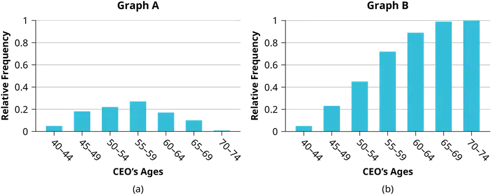
Use the following information to answer the next two exercises: Table 1.40 contains data on hurricanes that have made direct hits on the U.S. Between 1851 and 2004. A hurricane is given a strength category rating based on the minimum wind speed generated by the storm.
Table 1.40 Frequency of Hurricane Direct Hits
| Category | Number of Direct Hits | Relative Frequency | Cumulative Frequency |
|---|---|---|---|
| 1 | 109 | 0.3993 | 0.3993 |
| 2 | 72 | 0.2637 | 0.6630 |
| 3 | 71 | 0.2601 | |
| 4 | 18 | 0.9890 | |
| 5 | 3 | 0.0110 | 1.0000 |
| Total = 273 |
85. What is the relative frequency of direct hits that were category 4 hurricanes?
- 0.0768
- 0.0659
- 0.2601
- Not enough information to calculate
Answer
b
86. What is the relative frequency of direct hits that were AT MOST a category 3 storm?
- 0.3480
- 0.9231
- 0.2601
- 0.3370
1.4 Experimental Design and Ethics¶
87. How does sleep deprivation affect your ability to drive? A recent study measured the effects on 19 professional drivers. Each driver participated in two experimental sessions: one after normal sleep and one after 27 hours of total sleep deprivation. The treatments were assigned in random order. In each session, performance was measured on a variety of tasks including a driving simulation.
Use key terms from this module to describe the design of this experiment.
Answer
Explanatory variable: amount of sleep
Response variable: performance measured in assigned tasks
Treatments: normal sleep and 27 hours of total sleep deprivation
Experimental Units: 19 professional drivers
Lurking variables: none – all drivers participated in both treatments
Random assignment: treatments were assigned in random order; this eliminated the effect of any “learning” that may take place during the first experimental session
Control/Placebo: completing the experimental session under normal sleep conditions
Blinding: researchers evaluating subjects’ performance must not know which treatment is being applied at the time
88. An advertisement for Acme Investments displays the two graphs in Figure 1.14 to show the value of Acme’s product in comparison with the Other Guy’s product. Describe the potentially misleading visual effect of these comparison graphs. How can this be corrected?
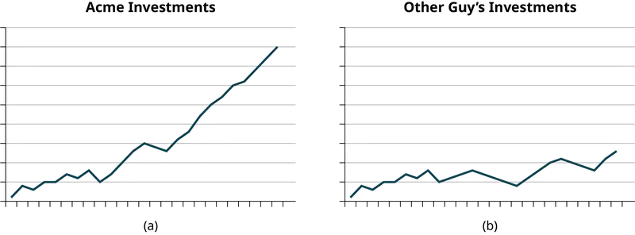
89. The graph in Figure 1.15 shows the number of complaints for six different airlines as reported to the US Department of Transportation in February 2013. Alaska, Pinnacle, and Airtran Airlines have far fewer complaints reported than American, Delta, and United. Can we conclude that American, Delta, and United are the worst airline carriers since they have the most complaints?
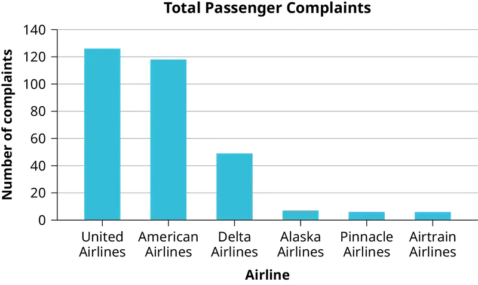
Answer
You cannot assume that the numbers of complaints reflect the quality of the airlines. The airlines shown with the greatest number of complaints are the ones with the most passengers. You must consider the appropriateness of methods for presenting data; in this case displaying totals is misleading.
Bringing It Together¶
90. Seven hundred and seventy-one distance learning students at Long Beach City College responded to surveys in a specific academic year. Highlights of the summary report are listed in Table 1.41.
Table 1.41 LBCC Distance Learning Survey Results
| Have computer at home | 96% |
| Unable to come to campus for classes | 65% |
| Age 41 or over | 24% |
| Would like LBCC to offer more DL courses | 95% |
| Took DL classes due to a disability | 17% |
| Live at least 16 miles from campus | 13% |
| Took DL courses to fulfill transfer requirements | 71% |
- What percent of the students surveyed do not have a computer at home?
- About how many students in the survey live at least 16 miles from campus?
- If the same survey were done at Great Basin College in Elko, Nevada, do you think the percentages would be the same? Why?
91. Several online textbook retailers advertise that they have lower prices than on-campus bookstores. However, an important factor is whether the Internet retailers actually have the textbooks that students need in stock. Students need to be able to get textbooks promptly at the beginning of the college term. If the book is not available, then a student would not be able to get the textbook at all, or might get a delayed delivery if the book is back ordered.
Martin, a college newspaper reporter, is investigating textbook availability at online retailers. He decides to investigate one textbook for each of the following seven subjects: calculus, biology, chemistry, physics, statistics, geology, and general engineering. He consults textbook industry sales data and selects the most popular nationally used textbook in each of these subjects. He visits websites for a random sample of major online textbook sellers and looks up each of these seven textbooks to see if they are available in stock for quick delivery through these retailers. Based on his investigation, Martin writes an article in which he draws conclusions about the overall availability of all college textbooks through online textbook retailers.
Write an analysis of his study that addresses the following issues: Is his sample representative of the population of all college textbooks? Explain why or why not. Describe some possible sources of bias in this study, and how it might affect the results of the study. Give some suggestions about what could be done to improve the study.
Answer
Answers will vary. Sample answer: The sample is not representative of the population of all college textbooks. Two reasons why it is not representative are that he only sampled seven subjects and he only investigated one textbook in each subject. There are several possible sources of bias in the study. The seven subjects that he investigated are all in mathematics and the sciences; there are many subjects in the humanities, social sciences, and other subject areas, (for example: literature, art, history, psychology, sociology, business) that he did not investigate at all. It may be that different subject areas exhibit different patterns of textbook availability, but his sample would not detect such results.
He also looked only at the most popular textbook in each of the subjects he investigated. The availability of the most popular textbooks may differ from the availability of other textbooks in one of two ways:
- the most popular textbooks may be more readily available online, because more new copies are printed, and more students nationwide are selling back their used copies OR
- the most popular textbooks may be harder to find available online, because more student demand exhausts the supply more quickly.
In reality, many college students do not use the most popular textbook in their subject, and this study gives no useful information about the situation for those less popular textbooks.
He could improve this study by:
- expanding the selection of subjects he investigates so that it is more representative of all subjects studied by college students, and
- expanding the selection of textbooks he investigates within each subject to include a mixed representation of both the most popular and less popular textbooks.
Adapted from Introductory Statistics 2e by OpenStax, licensed under CC BY 4.0. Access the original for free at openstax.org. Changes: converted to the web reading format of The Open Book Project.
-
McClung, M. Collins, D. “Because I know it will!”: placebo effects of an ergogenic aid on athletic performance. Journal of Sport & Exercise Psychology. 2007 Jun. 29(3):382-94. Web. April 30, 2013. ↩
-
Yudhijit Bhattacharjee, “The Mind of a Con Man,” Magazine, New York Times, April 26, 2013. Available online at: http://www.nytimes.com/2013/04/28/magazine/diederik-stapels-audacious-academic-fraud.html?src=dayp&_r=2& (accessed May 1, 2013). ↩
-
“Flawed Science: The Fraudulent Research Practices of Social Psychologist Diederik Stapel,” Tillburg University, November 28, 2012, http://www.tilburguniversity.edu/upload/064a10cd-bce5-4385-b9ff-05b840caeae6_120695_Rapp_nov_2012_UK_web.pdf (accessed May 1, 2013). ↩